\(\sin x\) +\(\cos x\) −\(\tan x\) −
4–1
تاقیکردنەوەی داتاشراوی یەکەمFirst Derivative Test
ئامانجی وانەکە
پێناسەی بەها شلۆقەکان و ناوچەکانی ڕوو لە زیادبوون و ڕوو لە کەمبوون، هەروەها دۆزینەوەی بەهایەکانی گەورەترین و بچووکترین کۆتایی خۆجێیی.
داتاشراوی یەکەم بەکاردەهێنین بۆ دۆزینەوەی هەریەکە لەمانە
ماوەی ڕوو لە کەمبوون
ماوەی ڕوو لە زیادبوون
خاڵی شلۆق و جۆرەکانی
تەنها خاڵی شلۆقە
بچووکترین کۆتایی خۆجێیی
گەورەترین کۆتایی خۆجێیی
بەهای شلۆق چییە؟
ئەو بەهایەیە کە:
- دانەیە لە بواری نەخشەکە.
- لەو خاڵەدا \(f'(x)=0\)، یان \(f'(x)\) پێناسەنەکراوە.
بەهای کۆتایی خۆجێیی — سێ جۆر
- خاڵی گەورەترین کۆتایی خۆجێیی (گ.ک.خ)
- خاڵی بچووکترین کۆتایی خۆجێیی (ب.ک.خ)
- تەنها شلۆق — نە گەورەترین و نە بچووکترین
تێبینی
هەر خاڵێک تەنها شلۆق بوو، ئەوا نە خاڵی گەورەترین کۆتایی خۆجێییە (گ.ک.خ) و نە بچووکترین کۆتایی خۆجێیی (ب.ک.خ).
ماوەکانی ڕوو لە زیادبوون و ڕوو لە کەمبوون
- ئەگەر \(f'(x) > 0\) ئەوا ماوەکە ڕوو لە زیادبوونە و بە \((+)\) هێما دەکرێت.
- ئەگەر \(f'(x) < 0\) ئەوا ماوەکە ڕوو لە کەمبوونە و بە \((-)\) هێما دەکرێت.
- ئەگەر \(f'(x) = 0\) ئەوا نەخشەکە نەگۆڕە.
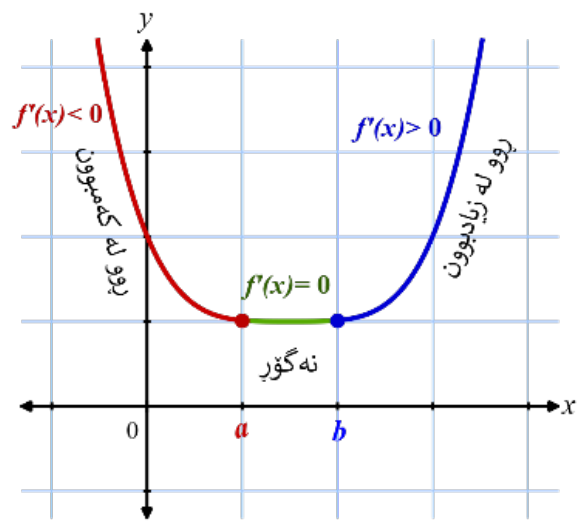
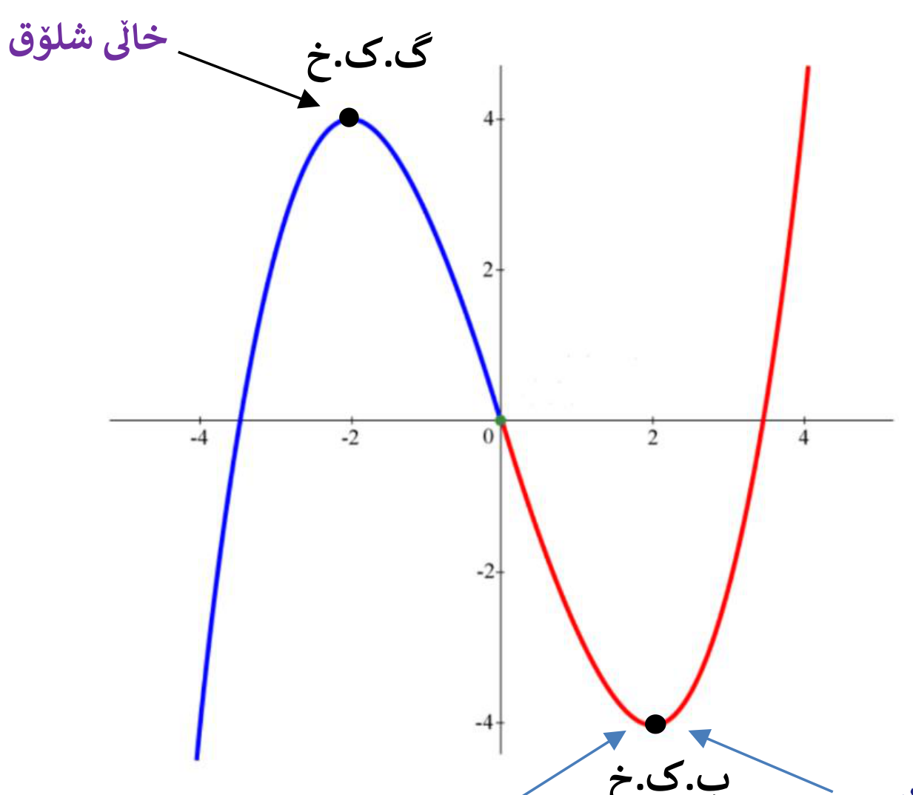
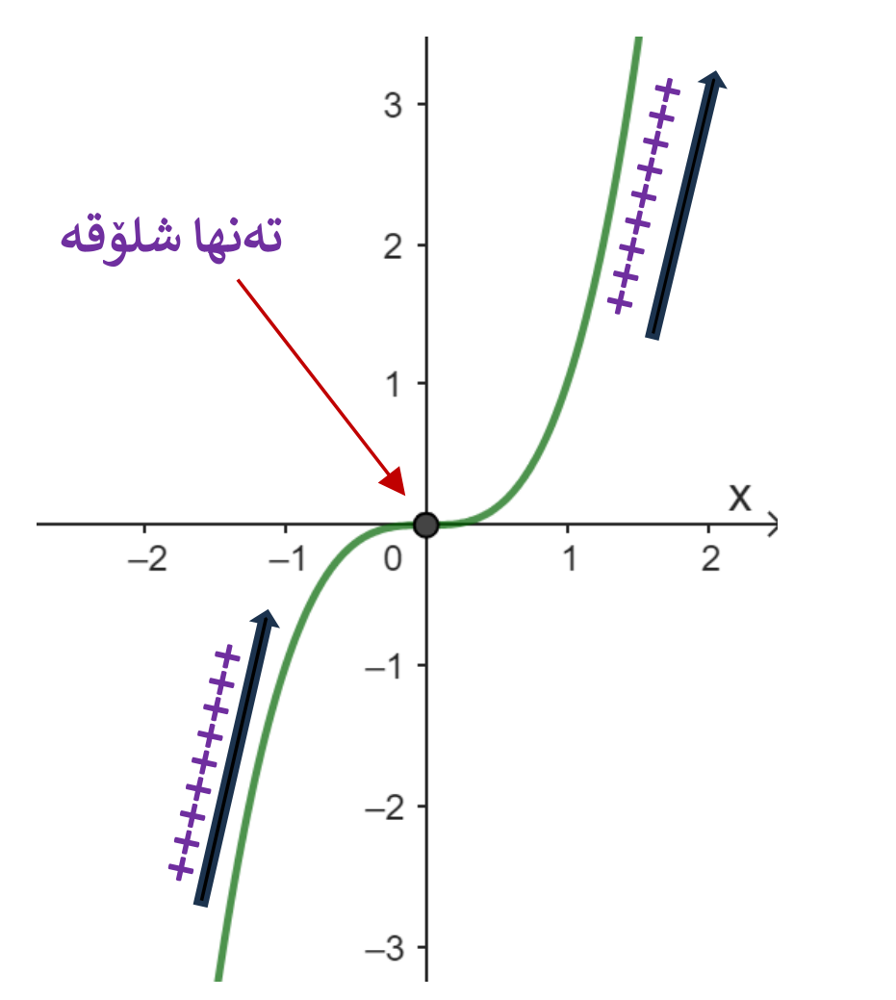
هەنگاوەکانی دۆزینەوەی ماوەی ڕوو لە زیادبوون و کەمبوون و خاڵی شلۆق
- داتاشراوەی یەکەمی نەخشەکە دەدۆزینەوە و یەکسانی دەکەین بە سفر.
- پاشان نرخی \(x\) دەدۆزینەوە — بە نرخی \(x\) دەوترێت بەهای شلۆق.
- نرخی \(x\) لە نەخشە بنەڕەتییەکە دادەنێینەوە و نرخی \(y\) دەدۆزینەوە — بە \((x,\,y)\) دەوترێت خاڵی شلۆق.
تاقیکردنەوەی هێما لەسەر هێڵی ژمارەکان
بەها شلۆقەکان، واتا نرخەکانی \(x\)، لەسەر هێڵی ژمارەکان دادەنێین. لە هەر ناوچەیەک ژمارەیەکی ئاسان و گونجاو وەردەگرین و لە \(f'(x)\) دایدەنێینەوە، لە چەپەوە بۆ ڕاست تاقی دەکەینەوە:
- ئەگەر نیشانەی \(f'(x) = {}\)\(+\) بوو، ئەوا ڕوو لە زیادبوونە.
- ئەگەر نیشانەی \(f'(x) = {}\)\(-\) بوو، ئەوا ڕوو لە کەمبوونە.
تێبینی
بۆ دیاریکردنی ماوەکانی ڕوو لە زیادبوون و ڕوو لە کەمبوون سەیری تەوەرەی \(x\) دەکەین.
دۆزینەوەی خاڵی گەورەترین و بچووکترین کۆتایی خۆجێیی
+ + + + +c− − − − −
هێما لە \(+\) بۆ \(-\) گۆڕا ⟵ گ.ک.خ
− − − − −c+ + + + +
هێما لە \(-\) بۆ \(+\) گۆڕا ⟵ ب.ک.خ
+ + + + +c+ + + + +
هێما نەگۆڕا ⟵ تەنها شلۆقە
− − − − −c− − − − −
هێما نەگۆڕا ⟵ تەنها شلۆقە
ئاگاداری
ماوەی ناوچەکان هەمیشە بە کراوەیی دەنووسرێن: \(\,]\,a\,,\,b\,[\,\).
وشەی پرسیار ← داواکراوی پرسیار
- لە پرسیاردا «بەهای شلۆق» هات ⟵ دۆزینەوەی \(x\).
- لە پرسیاردا «خاڵی شلۆق» هات ⟵ دۆزینەوەی \((x\,,\,y)\).
- «بەهای گ.ک.خ» یان «بەهای ب.ک.خ» ... هەیە لە ⟵ تەنها نرخی \(x\).
- «بەهای گ.ک.خ» یان «بەهای ب.ک.خ» ... دەکاتە ⟵ تەنها نرخی \(y\).
- «خاڵی گ.ک.خ» یان «خاڵی ب.ک.خ» ... کامەیە ⟵ هەردوو نرخی \((x\,,\,y)\).
پێناسەی فەرمی: نەخشەی ڕوو لە زیادبوون و ڕوو لە کەمبوون
نەخشەی \(f\) بە ڕوو لە زیادبوون دەوترێت لە ماوەی \(I=[a,b]\) ئەگەر بۆ هەر \(x_1 , x_2 \in I\) ی وا \(x_1 < x_2\) ئەوا \(f(x_1) < f(x_2)\).
هەروەها بە ڕوو لە کەمبوون دەوترێت لە ماوەی \(I=[a,b]\) ئەگەر بۆ هەر \(x_1 , x_2 \in I\) ی وا \(x_1 < x_2\) ئەوا \(f(x_1) > f(x_2)\).
جۆرەکانی بەهای شلۆق بە وێنە
نموونە
لەم وێنانەی خوارەوەدا لە \(x=c\) بەهای شلۆقیان هەیە — جا بە هۆی \(f'(c)=0\) بێت یان بە هۆی پێناسەنەکراوی \(f'(c)\).
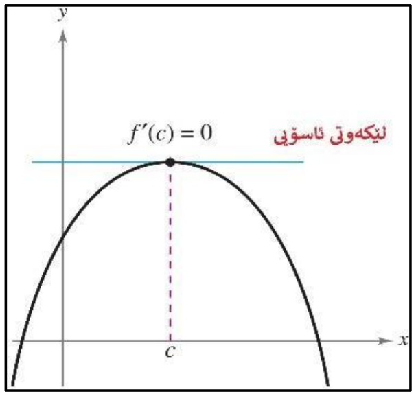
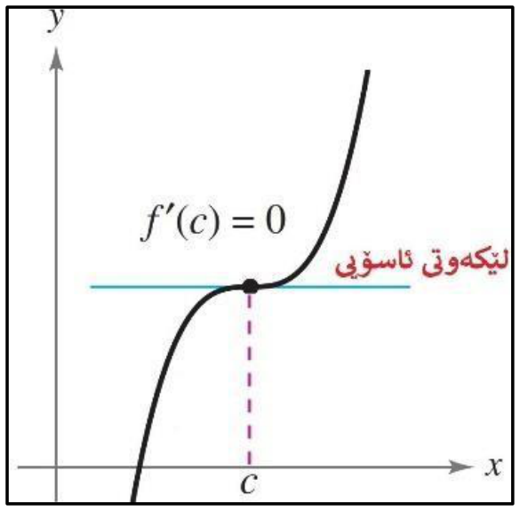
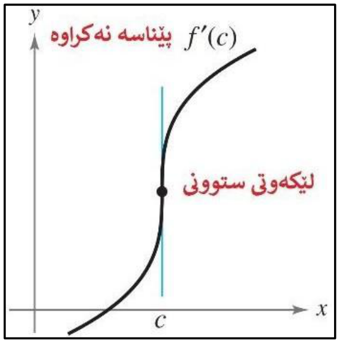
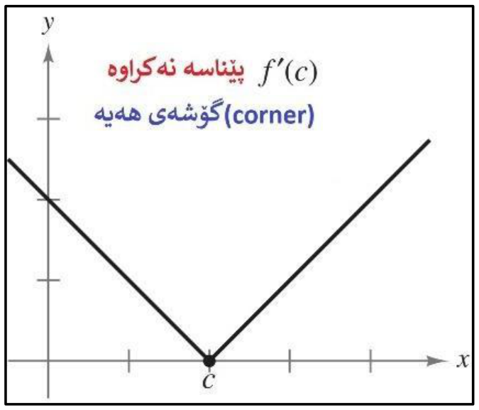
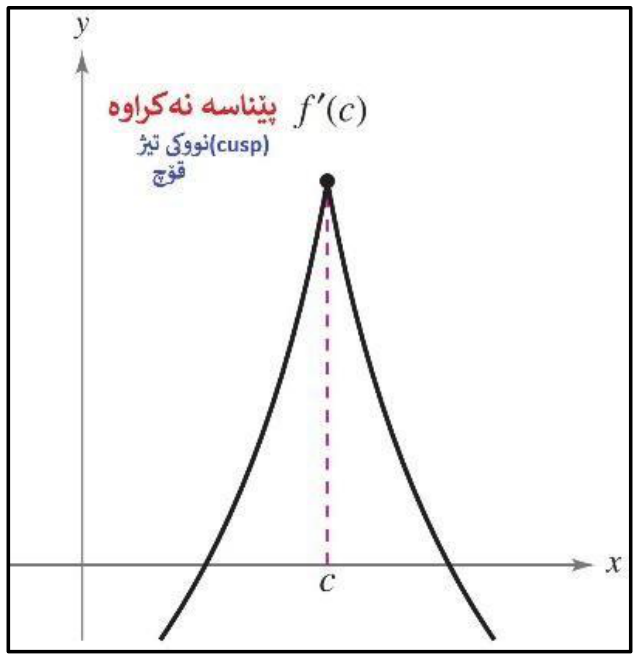
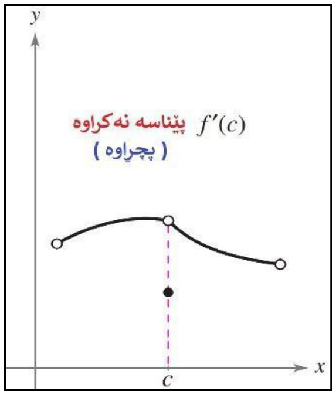
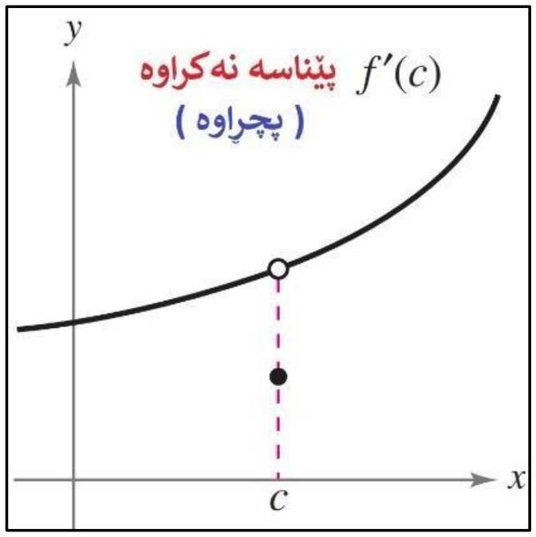
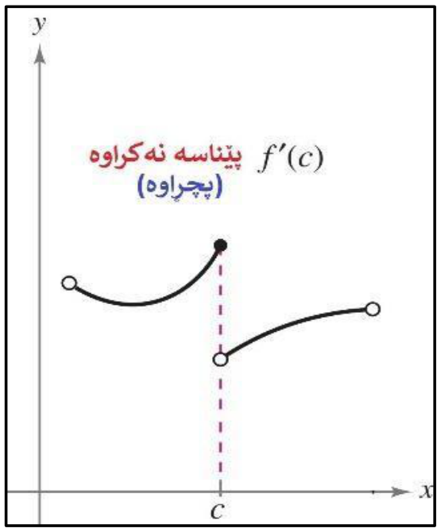
نەخشەی ئەندازەیی و کەرتی — پرسیارە وەزارییەکان
ڕێبازی کارسەرەتا داتاشراوە وەردەگرین، پاشان \(f'(x)\) یەکسان دەکەین بە سفر و نرخی \(x\) دەدۆزینەوە — بەو نرخەی \(x\) دەگوترێت بەهای شلۆق.
1
بەهای شلۆقی نەخشەی \(f(x)=x^{2}-8x\) کامەیە؟
2018 بەرایی- A\(x=-6\)
- B\(x=6\)
- C\(x=4\)
- D\(x=-4\)
شیکار
\(f(x)=x^{2}-8x \;\Longrightarrow\; f'(x)=2x-8\)
\(f'(x)=0 \;\Longrightarrow\; 2x-8=0 \;\Longrightarrow\; 2x=8\)
\(x=4\) بەهای شلۆق
2
بەها یان بەهاکانی شلۆقی نەخشەی \(f(x)=x^{2}(3-x)\) کامەیە؟
2018- A\(x=0\)
- B\(x=-2\)
- C\(x=2\)
- Dهەردووکیان (A و C)
شیکار
\(f(x)=3x^{2}-x^{3} \;\Longrightarrow\; f'(x)=6x-3x^{2}\)
\(f'(x)=0 \;\Longrightarrow\; 6x-3x^{2}=0 \;\Longrightarrow\; 3x(2-x)=0\)
\(x=0\) یان \(x=2\) بەها شلۆقەکان
3
بەها یان بەهاکانی شلۆقی ڕوونکردنەوەی نەخشەی \(f(x)=\dfrac{x^{5}-5x}{5}\) کامەیە؟
2018- A\(x=\pm 1\)
- B\(x=\pm 5\)
- C\(x=0\)
- Dنییە
شیکار
\(f'(x)=\dfrac{5x^{4}-5}{5} \;\Longrightarrow\; f'(x)=0\)
\(\dfrac{5x^{4}-5}{5}=0 \;\Longrightarrow\; 5x^{4}-5=0 \;\Longrightarrow\; x^{4}=1\)
\(\sqrt[4]{x^{4}}=\sqrt[4]{1} \;\Longrightarrow\; x=\pm 1\) بەها شلۆقەکان
4
بەهای شلۆقی نەخشەی \(f(x)=\dfrac{x-1}{x+1}\) کامەیە؟
2020- A\(x=-1\)
- B\(x=1\)
- C\(x=0\)
- Dنییە
5
بەها شلۆقەکانی نەخشەی \(f(x)=x+\dfrac{1}{x}\) کامەیە؟
20142016- A\(x=\pm 1,\,0\)
- B\(x=\pm 1\)
- C\(x=0\)
- Dجگە لەمانە
شیکار
\(f(x)=x+\dfrac{1}{x} \;\Longrightarrow\; f'(x)=1-\dfrac{1}{x^{2}}\)
\(f'(x)=0 \;\Longrightarrow\; 1-\dfrac{1}{x^{2}}=0 \;\Longrightarrow\; \dfrac{1}{x^{2}}=1\)
\(x^{2}=1 \;\Longrightarrow\; x=\pm 1\) بەها شلۆقەکان (دوولا و دوو نێوان دەکەین)
6
بەها شلۆقەکانی نەخشەی \(f(x)=x-\dfrac{1}{x}\) کامەیە؟
2019- A\(x=-2\,,\;x=1\)
- B\(x=0\,,\;x=-1\)
- C\(x=\pm 1\)
- Dنییە
7
بەهای شلۆقی نەخشەی \(f(x)=(x+1)^{5}\) بدۆزەرەوە.
2020- A\(x=1\)
- B\(x=0\)
- C\(x=-1\)
- Dنییە
نموونە ١
ماوەکانی ڕوو لە زیادبوون و ڕوو لە کەمبوونی نەخشەی \(f(x)=x^{3}-\tfrac{3}{2}x^{2}\) بدۆزەوە. 2016
- A\(]-\infty,0[\)
- B\(]1,+\infty[\)
- C\(]0,1[\)
- Dهیچیان
\(f'(x)=3x^{2}-3x\)
\(f'(x)=0 \;\Longrightarrow\; 3x^{2}-3x=0 \;\Longrightarrow\; 3x(x-1)=0\)
\(x=0\) یان \(x=1\) بەها شلۆقەکان
لە هەر ناوچەیەک ژمارەیەکی گونجاو وەردەگرین و لە \(f'\) دایدەنێینەوە؛ هێمای ئەنجامەکە ڕوو لە زیادبوون یان کەمبوونمان بۆ دیاری دەکات.
| -1 | \tfrac12 | 2 | |||
| \(x\) | \(-\infty\) | \(0\) | \(1\) | \(+\infty\) | |
|---|---|---|---|---|---|
| \(f'(x)\) | + + + + | \(0\) | − − − − | \(0\) | + + + + |
| \(f(x)\) | \(0\) | \(-\tfrac12\) |
\(f'(-1)=3(-1)^{2}-3(-1)=6>0\) ڕوو لە زیادبوون
\(f'\!\left(\tfrac12\right)=3\left(\tfrac12\right)^{2}-3\left(\tfrac12\right)=-\tfrac34<0\) ڕوو لە کەمبوون
\(f'(2)=3(2)^{2}-3(2)=6>0\) ڕوو لە زیادبوون
ڕوو لە زیادبوون:\(\,]-\infty,0[\;\cup\;]1,+\infty[\,\)
ڕوو لە کەمبوون:\(\,]0,1[\,\)
خاڵی چاودێری ١
ماوەکانی ڕوو لە زیادبوون و ڕوو لە کەمبوونی نەخشەی \(f(x)=\tfrac13 x^{3}-\tfrac32 x^{2}-\tfrac92\) بدۆزەوە.
\(f'(x)=x^{2}-3x \;\Longrightarrow\; f'(x)=0\)
\(x(x-3)=0 \;\Longrightarrow\; x=0\) یان \(x=3\) بەها شلۆقەکان
| -1 | 1 | 4 | |||
| \(x\) | \(-\infty\) | \(0\) | \(3\) | \(+\infty\) | |
|---|---|---|---|---|---|
| \(f'(x)\) | + + + + | \(0\) | − − − − | \(0\) | + + + + |
| \(f(x)\) | \(-4.5\) | \(-9\) |
\(f'(-1)=(-1)^{2}-3(-1)=4>0\) ڕوو لە زیادبوون
\(f'(1)=(1)^{2}-3(1)=-2<0\) ڕوو لە کەمبوون
\(f'(4)=(4)^{2}-3(4)=4>0\) ڕوو لە زیادبوون
ڕوو لە زیادبوون:\(\,]-\infty,0[\;\cup\;]3,+\infty[\,\)
ڕوو لە کەمبوون:\(\,]0,3[\,\)
8
خاڵی بچووکترین کۆتایی خۆجێیی نەخشەی \(f(x)=x^{4}+2x^{2}\) بدۆزەرەوە.
2023- A\((1\,,\,3)\)
- B\((-1\,,\,3)\)
- C\((0\,,\,0)\)
- Dنییە
نەخشەی بەهای ڕووت
تێبینیئەگەر لە پرسیاردا ماوە درابوو، دوای دۆزینەوەی بەهای \(x\) بەراوردی دەکەین لەگەڵ ماوەکە: ئەگەر دانە بوو لە ماوەکە وەریدەگرین، ئەگەر دانە نەبوو فەرامۆشی دەکەین.
تێبینیبەهای شلۆقی نەخشەی ڕووت بریتییە لەو بەهایەی \(x\) کە ناو ڕووتەکە و داتاشراوەکە دەکاتە سفر و لە بواری نەخشەکەدا هەیە.
نموونە ٢
بەهای داتاشراوەکە بدۆزەوە لە هەر بەهایەکی کۆتایی خۆجێیی بۆ \(f(x)=|x|\) لە ماوەی \([-1\,,\,1]\).
\(f(x)=|x|=\begin{cases} x & x\ge 0\\ -x & x<0\end{cases}\)
\(f'(x)=\begin{cases} 1 & x>0\\ -1 & x<0\end{cases} \;\Longrightarrow\; f'(x)\neq 0\)
داتاشراوی لای ڕاست \(\neq\) داتاشراوی لای چەپ ⟵ \(f'\) پێناسەنەکراوە لە \(x=0\)
\(x=0 \;\Longrightarrow\; y=|0|=0\)
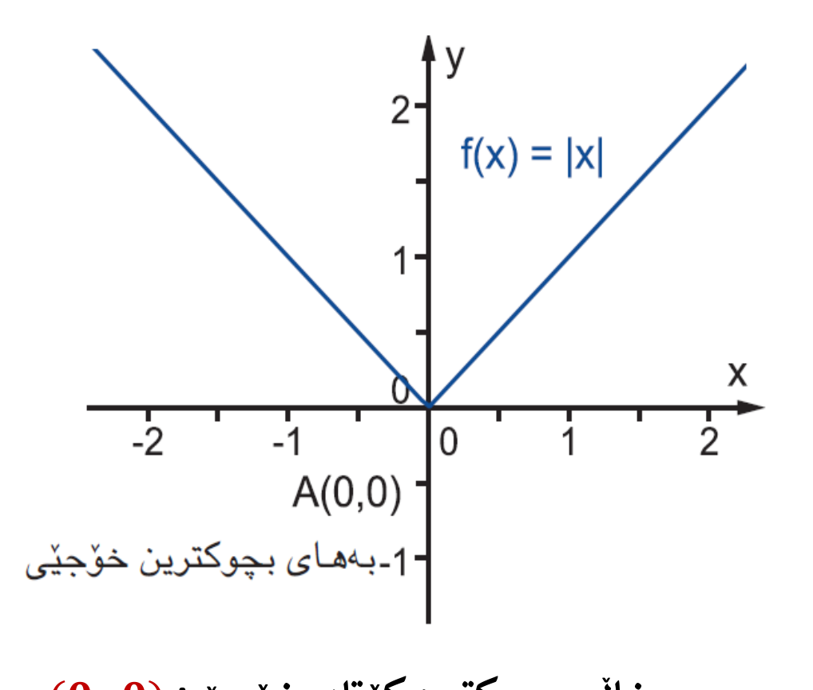
| \(x\) | \(-1\) | \(0\) | \(1\) |
|---|---|---|---|
| \(f'(x)\) | − − − − | پێناسەنەکراوە | + + + + |
| \(f(x)\) | \(0\) |
خاڵی بچووکترین کۆتایی خۆجێیی:\((0\,,\,0)\)
خاڵی چاودێری ٢
بەهای داتاشراوەکە لە هەر بەهایەکی کۆتایی خۆجێیی بۆ \(f(x)=-|x|\) بدۆزەوە.
داتاشراوی یەکەمی نەخشەکە پێناسەنەکراوە لە \(x=0\)
نەخشەکە بەهای شلۆقی هەیە لە \(x=0\)
\(x=0 \;\Longrightarrow\; y=-|0|=0 \;;\;(0\,,\,0)\)
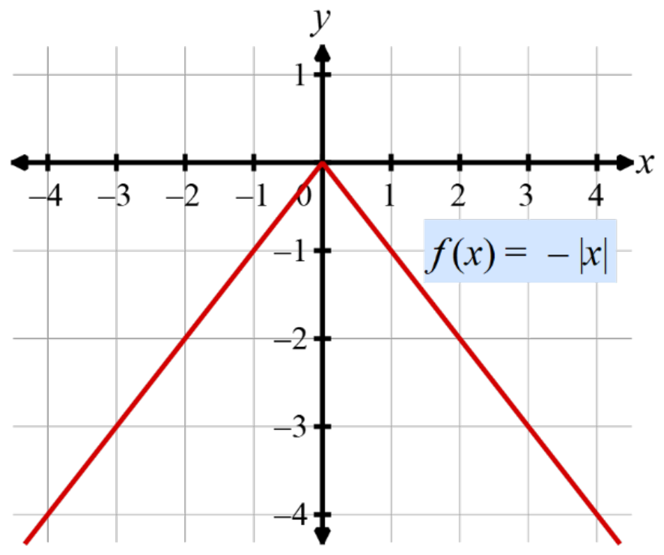
| \(x\) | \(-\infty\) | \(0\) | \(+\infty\) |
|---|---|---|---|
| \(f'(x)\) | + + + + | پێناسەنەکراوە | − − − − |
| \(f(x)\) | \(0\) |
خاڵی گەورەترین کۆتایی خۆجێیی:\((0\,,\,0)\)
9
ماوەی ڕوو لە کەمبوون بۆ ڕوونکردنەوەی نەخشەی \(f(x)=3-|x+4|\) دیاریبکە.
2022- A\(]-\infty,3[\)
- B\(]-\infty,4[\)
- C\(]3,+\infty[\)
- D\(]-4,+\infty[\)
نەخشەی کەرتی
نەخشەی کەرتدەبێت سەرە و ژێرەی کەرتەکە یەکسان بکەین بە سفر. ئەوەی لە سەرەوە دەیدۆزینەوە ڕاستەوخۆ دەبێتە بەهای شلۆق، بەڵام ئەوەی لە ژێرەوە دەیدۆزینەوە بە ئەگەرێکی کەم دەبێتە بەهای شلۆق.
تێبینیئەو ژمارەیەی لە ژێرەوە دەدۆزینەوە لە نەخشە بنەڕەتییەکە دادەنێینەوە: ئەگەر لە بواردا بوو دەبێتە بەهای شلۆق، ئەگەر لە بواردا نەبوو نابێتە بەهای شلۆق — وە لە دەرکەناری ستوونی داتاشراو پێناسەنەکراوە.
10
بەها شلۆقەکانی نەخشەی \(f(x)=\dfrac{x^{2}}{x+1}\) بدۆزەرەوە.
2024- A\(\begin{cases}x=-2\\ x=-1\\ x=0\end{cases}\)
- B\(\begin{cases}x=1\\ x=0\end{cases}\)
- C\(\begin{cases}x=0\\ x=2\end{cases}\)
- D\(\begin{cases}x=-2\\ x=0\end{cases}\)
شیکار
\(f'(x)=\dfrac{(x+1)(2x)-x^{2}(1)}{(x+1)^{2}}=\dfrac{2x^{2}+2x-x^{2}}{(x+1)^{2}}=\dfrac{x^{2}+2x}{(x+1)^{2}}\)
\(f'(x)=0 \;\Longrightarrow\; \dfrac{x^{2}+2x}{(x+1)^{2}}=0\)
ژێرە \(=0\)
\((x+1)^{2}=0 \;\Longrightarrow\; x=-1\)
\(f(-1)=\dfrac{(-1)^{2}}{(-1)+1}=\dfrac{1}{0}\)
دەرکەناری ستوونی
سەرە \(=0\)
\(x^{2}+2x=0 \;\Longrightarrow\; x(x+2)=0\)
\(x=0\) یان \(x=-2\)
بەها شلۆقەکان
نموونە ٣
بەها شلۆقەکان و خاڵەکانی کۆتایی خۆجێیی نەخشەی \(f(x)=\dfrac{9(x^{2}-3)}{x^{3}}\) بدۆزەوە.
\(f(x)=\dfrac{9x^{2}-27}{x^{3}}\;\Longrightarrow\;\) بوار: \(\;\mathbb{R}-\{0\}\)
\(f'(x)=\dfrac{18x(x^{3})-3x^{2}(9x^{2}-27)}{(x^{3})^{2}}=\dfrac{18x^{4}-27x^{4}+81x^{2}}{x^{6}}=\dfrac{-9x^{2}+81}{x^{4}}\)
ژێرە \(=0 \;\Longrightarrow\; x^{4}=0 \;\Longrightarrow\; x=0\) دەرکەناری ستوونی
سەرە \(=0 \;\Longrightarrow\; -9x^{2}+81=0 \;\Longrightarrow\; x^{2}=9 \;\Longrightarrow\; x=\pm 3\) بەها شلۆقەکان
نەخشەکە بەهای شلۆقی نییە لە \(x=0\)، چونکە دەرکەناری ستوونییە و داتاشراوی یەکەمی لەوێ پێناسەنەکراوە.
\(x=-3 \;\Longrightarrow\; y=\dfrac{9x^{2}-27}{x^{3}}=-2\) · \(x=3 \;\Longrightarrow\; y=2\)
| -4 | -1 | 1 | 4 | ||||
| \(x\) | \(-\infty\) | \(-3\) | \(0\) | \(3\) | \(+\infty\) | ||
|---|---|---|---|---|---|---|---|
| \(f'(x)\) | − − − − | \(0\) | + + + + | دەرکەناری ستوونی | + + + + | \(0\) | − − − − |
| \(f(x)\) | \(-2\) | \(2\) |
خاڵی گ.ک.خ:\((3\,,\,2)\)
خاڵی ب.ک.خ:\((-3\,,\,-2)\)
نەخشەی جێگرەوەیی — \(\sin,\;\cos,\;\tan\)
تێبینیبۆ دیاریکردنی ماوەکانی ڕوو لە زیادبوون و ڕوو لە کەمبوونی نەخشەی \(\sin,\;\cos,\;\tan\) تەنها یەک ماوە تاقی دەکەینەوە؛ نیشانەی هەرچی بوو، ماوەکانی تەنیشتی بە پێچەوانەوە دەبن لە نیشانەدا.
نموونە ٤
بەها شلۆقەکان و خاڵەکانی کۆتایی خۆجێیی نەخشەی \(f(x)=\sin x\) لە ماوەی \(\,]0\,,\,2\pi[\,\) بدۆزەوە.
\(f(x)=\sin x \;\Longrightarrow\; f'(x)=\cos x \;\Longrightarrow\; f'(x)=0\)
\(\cos x = 0\)
\(x=\tfrac{\pi}{2}\;\in\;]0,2\pi[\)
\(x=\tfrac{3\pi}{2}\;\in\;]0,2\pi[\)
\(x=\tfrac{5\pi}{2}\;\notin\;]0,2\pi[\)
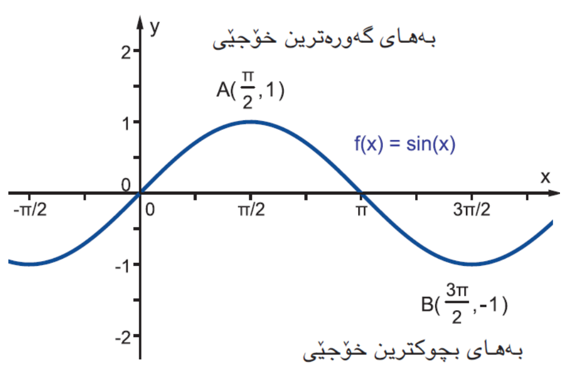
| \(\tfrac{\pi}{4}\) | \(\pi\) | \(\tfrac{7\pi}{4}\) | |||
| \(x\) | \(0\) | \(\tfrac{\pi}{2}\) | \(\tfrac{3\pi}{2}\) | \(2\pi\) | |
|---|---|---|---|---|---|
| \(f'(x)\) | + + + + | \(0\) | − − − − | \(0\) | + + + + |
| \(f(x)\) | \(1\) | \(-1\) |
\(f'(1)=\cos(1)=+\) تەنها یەک ماوە تاق دەکەینەوە
\(x=\tfrac{\pi}{2}\;\Longrightarrow\; y=\sin\!\left(\tfrac{\pi}{2}\right)=1\)
\(x=\tfrac{3\pi}{2}\;\Longrightarrow\; y=\sin\!\left(\tfrac{3\pi}{2}\right)=-1\)
خاڵی گ.ک.خ:\(\left(\tfrac{\pi}{2}\,,\,1\right)\)
خاڵی ب.ک.خ:\(\left(\tfrac{3\pi}{2}\,,\,-1\right)\)
11
ماوەی ڕوو لە زیادبوونی نەخشەی \(f(x)=1-\cos\dfrac{x}{2}\) بدۆزەرەوە لە \(-\pi<x<\pi\).
2020- A\(]-\pi,0[\)
- B\(]-\pi,\pi[\)
- C\(]0,\pi[\)
- Dنییە
شیکار
\(f'(x)=\tfrac12 \sin\tfrac{x}{2} \;\Longrightarrow\; \tfrac12\sin\tfrac{x}{2}=0 \;\;]*2\;\Longrightarrow\; \sin\tfrac{x}{2}=0\)
\(\tfrac{x}{2}=0\,,\,\pi\,,\,2\pi\;\dots \;\;]*2 \;\Longrightarrow\; x=0\,,\,2\pi\,,\,4\pi\dots\)
\(x=0\;\in\;]-\pi,\pi[\) دەکەوێتە نێوان ماوەکە — وەری دەگرین
\(x=2\pi\;\notin\;]-\pi,\pi[\) ناکەوێتە نێوان ماوەکە
| \(-90^{\circ}\) | \(90^{\circ}\) | ||
| \(x\) | \(-\pi\) | \(0\) | \(\pi\) |
|---|---|---|---|
| \(f'(x)\) | − − − − | \(0\) | + + + + |
| \(f(x)\) | \(1\) |
ڕوو لە زیادبوون:\(\,]0,\pi[\,\)
ڕوو لە کەمبوون:\(\,]-\pi,0[\,\)
12
ماوەی ڕوو لە کەمبوونی نەخشەی \(f(x)=2\cos(\pi x)\) دیاریبکە، کاتێک \(\tfrac12<x<\tfrac52\).
2024- A\(\left]\tfrac12,1\right[\;\cup\;\left]2,\tfrac52\right[\)
- B\(]1,2[\)
- C\(\left]\tfrac32,2\right[\)
- Dنییە
13
ماوەی ڕوو لە زیادبوونی ڕوونکردنەوەی نەخشەی \(f(x)=\sin x-\cos x\) لە ماوەی \(\,]0,2\pi[\,\) بدۆزەوە.
2025- A\(\left]\tfrac{\pi}{4},\tfrac{5\pi}{4}\right[\)
- B\(\left]\tfrac{3\pi}{4},\tfrac{7\pi}{4}\right[\)
- C\(\left]0,\tfrac{\pi}{4}\right[\cup\left]\tfrac{5\pi}{4},2\pi\right[\)
- D\(\left]0,\tfrac{3\pi}{4}\right[\cup\left]\tfrac{7\pi}{4},2\pi\right[\)
پێداویستی: گۆشەی ڕاگر و چوارەکەکان
گۆشە ڕاگرەکان\(\tfrac{\pi}{6}\,,\;\tfrac{\pi}{4}\,,\;\tfrac{\pi}{3}\) — ئەمانە بنەمای هەموو کارەکانن.
چارەکی دووەم\(x=\pi-\text{ڕاگر}\)
چارەکی یەکەم\(x=\text{ڕاگر}\)
\(\sin x\) +\(\cos x\) +\(\tan x\) +
چارەکی سێیەم\(x=\pi+\text{ڕاگر}\)
\(\sin x\) −\(\cos x\) −\(\tan x\) +
چارەکی چوارەم\(x=2\pi-\text{ڕاگر}\)
\(\sin x\) −\(\cos x\) +\(\tan x\) −
تێبینیبۆ دۆزینەوەی گۆشەکان، سەرەتا گۆشەی ڕاگر دەدۆزینەوە، پاشان بەپێی نیشانەی \(\sin,\;\cos,\;\tan\) چارەکەکە دیاری دەکەین و گۆشەکانی تێدا دەدۆزینەوە.
| \(\) | \(\tfrac{\pi}{6}\) | \(\tfrac{\pi}{4}\) | \(\tfrac{\pi}{3}\) | \(\tfrac{\pi}{2}\) | |
|---|---|---|---|---|---|
| \(\theta\) | \(0^{\circ}\) | \(30^{\circ}\) | \(45^{\circ}\) | \(60^{\circ}\) | \(90^{\circ}\) |
| \(\sin\theta\) | \(\tfrac{\sqrt0}{2}\) | \(\tfrac{\sqrt1}{2}\) | \(\tfrac{\sqrt2}{2}\) | \(\tfrac{\sqrt3}{2}\) | \(\tfrac{\sqrt4}{2}\) |
| \(\cos\theta\) | \(\tfrac{\sqrt4}{2}\) | \(\tfrac{\sqrt3}{2}\) | \(\tfrac{\sqrt2}{2}\) | \(\tfrac{\sqrt1}{2}\) | \(\tfrac{\sqrt0}{2}\) |
| \(\) | \(\tfrac{\pi}{6}\) | \(\tfrac{\pi}{4}\) | \(\tfrac{\pi}{3}\) | \(\tfrac{\pi}{2}\) | |
|---|---|---|---|---|---|
| \(\theta\) | \(0^{\circ}\) | \(30^{\circ}\) | \(45^{\circ}\) | \(60^{\circ}\) | \(90^{\circ}\) |
| \(\tan\theta\) | \(\sqrt{\tfrac{0}{4}}\) | \(\sqrt{\tfrac{1}{3}}\) | \(\sqrt{\tfrac{2}{2}}\) | \(\sqrt{\tfrac{3}{1}}\) | \(\sqrt{\tfrac{4}{0}}\) |
\(\sin\): \(\sin 0=\tfrac{\sqrt0}{2}\), \(\;\sin 45=\tfrac{\sqrt2}{2}\), \(\;\sin 60=\tfrac{\sqrt3}{2}\), \(\;\sin 90=\tfrac{\sqrt4}{2}=1\)
\(\cos\): \(\cos 0=\tfrac{\sqrt4}{2}=1\), \(\;\cos 30=\tfrac{\sqrt3}{2}\), \(\;\cos 60=\tfrac12\), \(\;\cos 90=0\)
\(\tan\): \(\tan\theta=\tfrac{\sin\theta}{\cos\theta}\), \(\;\tan 60=\sqrt3\), \(\;\tan 30=\tfrac{1}{\sqrt3}\)
تێبینیئەگەر لە پرسیاردا \(\sin\) و \(\cos\) یەکسان بوو بە سفر، ئەوە پێویست بە گۆشەی ڕاگر ناکات — بەم شێوازە نرخی \(x\) دەدۆزێتەوە:
\(\cos x=0\)
\(x=\pm\tfrac{\pi}{2}\,,\;\pm\tfrac{3\pi}{2}\,,\;\pm\tfrac{5\pi}{2}\,,\;\pm\tfrac{7\pi}{2}\,,\;\dots\)
\(\sin x=0\)
\(x=0\,,\;\pm\pi\,,\;\pm2\pi\,,\;\pm3\pi\,,\;\pm4\pi\,,\;\dots\)
نموونە ٥
ماوەکانی ڕوو لە زیادبوون و کەمبوون و بەهایەکانی کۆتایی خۆجێیی نەخشەی \(f(x)=\tfrac12 x-\sin x\) لە ماوەی \(\,]0\,,\,2\pi[\,\) بدۆزەوە.
\(f'(x)=\tfrac12-\cos x \;\Longrightarrow\; f'(x)=0\)
\(\tfrac12-\cos x=0 \;\Longrightarrow\; \cos x=\tfrac12 \;\Longrightarrow\; x=\cos^{-1}\tfrac12 \;\Longrightarrow\; x=60^{\circ}=\tfrac{\pi}{3}\) گۆشەی ڕاگر
لە چارەکی یەکەم و چوارەم \(\cos\) موجەبە
چ₁: \(x=\tfrac{\pi}{3}\)چ₄: \(x=2\pi-\tfrac{\pi}{3}=\tfrac{5\pi}{3}\) بەها شلۆقەکان
| \(\tfrac{\pi}{6}\) | \(\pi\) | \(\tfrac{11\pi}{6}\) | |||
| \(x\) | \(0\) | \(\tfrac{\pi}{3}\) | \(\tfrac{5\pi}{3}\) | \(2\pi\) | |
|---|---|---|---|---|---|
| \(f'(x)\) | − − − − | \(0\) | + + + + | \(0\) | − − − − |
| \(f(x)\) | \(ب\) | \(گ\) |
\(f'(\pi)=\tfrac12-\cos(\pi)=\tfrac12-(-1)=\tfrac32>0\) تەنها یەک ماوە تاق دەکەینەوە
\(x=\tfrac{\pi}{3}\;\Longrightarrow\; f(x)=\tfrac12\left(\tfrac{\pi}{3}\right)-\sin\left(\tfrac{\pi}{3}\right)=\tfrac{\pi}{6}-\tfrac{\sqrt3}{2}=\tfrac{\pi-3\sqrt3}{6}\)
\(x=\tfrac{5\pi}{3}\;\Longrightarrow\; f(x)=\tfrac12\left(\tfrac{5\pi}{3}\right)-\sin\left(\tfrac{5\pi}{3}\right)=\tfrac{5\pi}{6}+\tfrac{\sqrt3}{2}=\tfrac{5\pi+3\sqrt3}{6}\)
ڕوو لە زیادبوون:\(\left]\tfrac{\pi}{3},\tfrac{5\pi}{3}\right[\)
ڕوو لە کەمبوون:\(\left]0,\tfrac{\pi}{3}\right[\cup\left]\tfrac{5\pi}{3},2\pi\right[\)
خاڵی ب.ک.خ:\(\left(\tfrac{\pi}{3},\tfrac{\pi-3\sqrt3}{6}\right)\)
خاڵی گ.ک.خ:\(\left(\tfrac{5\pi}{3},\tfrac{5\pi+3\sqrt3}{6}\right)\)
خاڵی چاودێری ٣
بەهایەکانی کۆتایی خۆجێیی نەخشەی \(f(x)=\cos x-\tfrac12 x\) لە ماوەی \(\,]0\,,\,2\pi[\,\) بدۆزەوە.
\(f'(x)=-\sin x-\tfrac12 \;\Longrightarrow\; f'(x)=0\)
\(-\sin x-\tfrac12=0 \;\Longrightarrow\; \sin x=-\tfrac12 \;\Longrightarrow\; x=\sin^{-1}\left(-\tfrac12\right) \;\Longrightarrow\; x=30^{\circ}=\tfrac{\pi}{6}\) گۆشەی ڕاگر
لە چارەکی سێیەم و چوارەم \(\sin\) سالبە
چ₃: \(x=\pi+\tfrac{\pi}{6}=\tfrac{7\pi}{6}\)چ₄: \(x=2\pi-\tfrac{\pi}{6}=\tfrac{11\pi}{6}\)
| \(\tfrac{\pi}{2}\) | \(\tfrac{3\pi}{2}\) | \(\tfrac{23\pi}{12}\) | |||
| \(x\) | \(0\) | \(\tfrac{7\pi}{6}\) | \(\tfrac{11\pi}{6}\) | \(2\pi\) | |
|---|---|---|---|---|---|
| \(f'(x)\) | − − − − | \(0\) | + + + + | \(0\) | − − − − |
| \(f(x)\) | \(ب\) | \(گ\) |
\(f'(\pi)=-\sin(\pi)-\tfrac12=-\tfrac12<0\)
\(x=\tfrac{7\pi}{6}\;\Longrightarrow\; f(x)=\cos\left(\tfrac{7\pi}{6}\right)-\tfrac12\left(\tfrac{7\pi}{6}\right)=-\tfrac{\sqrt3}{2}-\tfrac{7\pi}{12}=\tfrac{-6\sqrt3-7\pi}{12}\)
\(x=\tfrac{11\pi}{6}\;\Longrightarrow\; f(x)=\cos\left(\tfrac{11\pi}{6}\right)-\tfrac12\left(\tfrac{11\pi}{6}\right)=\tfrac{\sqrt3}{2}-\tfrac{11\pi}{12}=\tfrac{6\sqrt3-11\pi}{12}\)
خاڵی ب.ک.خ:\(\left(\tfrac{7\pi}{6},\tfrac{-6\sqrt3-7\pi}{12}\right)\)
خاڵی گ.ک.خ:\(\left(\tfrac{11\pi}{6},\tfrac{6\sqrt3-11\pi}{12}\right)\)
نەخشەی بەرزکراوەیی و لۆگارتمی
تێبینیلە نەخشەی سێجا و نەخشەی \(\ln\) دەبێت سەرەتا بوارەکەی دیاری بکەین، پاشان شیکاری بکەین.
14
ماوەکانی ڕوو لە زیادبوون و کەمبوون و بەهای کۆتایی خۆجێیی نەخشەی \(f(x)=\dfrac{\ln x}{x}\) بدۆزەوە.
2020ڕەش و سپی ٤شیکار
بوار: \(\;]0,+\infty[\)
\(f'(x)=\dfrac{x\left(\tfrac1x\right)-\ln x(1)}{x^{2}}=\dfrac{1-\ln x}{x^{2}} \;\Longrightarrow\; f'(x)=0\)
سەرە \(=0 \;\Longrightarrow\; 1-\ln x=0 \;\Longrightarrow\; \ln x=1 \;\Longrightarrow\; x=e\) بەهای شلۆق
ژێرە \(=0 \;\Longrightarrow\; x^{2}=0 \;\Longrightarrow\; x=0\;\notin\) بوار دەرکەناری ستوونی
| \(-1\) | \(1\) | \(2e\) | |||
| \(x\) | \(-\infty\) | \(0\) | \(e\) | \(+\infty\) | |
|---|---|---|---|---|---|
| \(f'(x)\) | ✕ | پێناسەنەکراوە | + + + + | \(0\) | − − − − |
| \(f(x)\) | لە بواردا نییە | \(\tfrac{1}{e}\) |
\(x=e \;\Longrightarrow\; f(e)=\dfrac{\ln e}{e}=\dfrac1e\)
ڕوو لە زیادبوون:\(\,]0,e[\,\)
ڕوو لە کەمبوون:\(\,]e,+\infty[\,\)
خاڵی گ.ک.خ:\(\left(e\,,\,\tfrac1e\right)\)
15
لە هاوکێشەی \(f(x)=e^{x}-x\) کام بەهای گۆڕاوی \(x\) وادەکات \(f'(x)=0\) (بەهای شلۆق)؟
ڕێپەری- A\(0\)
- B\(1\)
- C\(-1\)
- Dنییە
شیکار
\(f(x)=e^{x}-x \;\Longrightarrow\; f'(x)=e^{x}-1\)
\(f'(x)=0 \;\Longrightarrow\; e^{x}-1=0 \;\Longrightarrow\; e^{x}=1\)
\(\ln e^{x}=\ln 1 \;\Longrightarrow\; x=0\) بەهای شلۆق (بۆ هەردوولا \(\ln\) وەردەگرین)
16
بەهای ئەوەپەڕی خۆجێیی نەخشەی \(f(x)=e^{x}-x\) بریتییە لە:
ڕێپەری- Aگەورەترین بەها دەکاتە \(e\)
- Bبچووکترین بەها دەکاتە \(0\)
- Cگەورەترین بەها دەکاتە \(0\)
- Dبچووکترین بەها دەکاتە \(1\)
17
بەهای بچووکترین خۆجێیی نەخشەی \(f(x)=\tfrac12 e^{2x}-4e^{x}+3x\) بریتییە لە:
ڕێپەری- A\(x=0\;\text{لە}\;-\tfrac72\)
- B\(x=0\;\text{لە}\;3\ln 3-12\)
- C\(x=\ln 3\;\text{لە}\;3\ln 3-\tfrac{15}{2}\)
- Dنییە
شیکار
\(f'(x)=e^{2x}-4e^{x}+3\;,\quad\) بوار: \(\mathbb{R}\)
\(f'(x)=0 \;\Longrightarrow\; e^{2x}-4e^{x}+3=0 \;\Longrightarrow\; (e^{x}-1)(e^{x}-3)=0\)
\(e^{x}=1 \;\Longrightarrow\; x=0\) یان \(e^{x}=3 \;\Longrightarrow\; x=\ln 3\) بەهاکانی شلۆق
| \(-1\) | \(1\) | \(3\) | |||
| \(x\) | \(-\infty\) | \(0\) | \(\ln 3\) | \(+\infty\) | |
|---|---|---|---|---|---|
| \(f'(x)\) | + + + + | \(0\) | − − − − | \(0\) | + + + + |
| \(f(x)\) | \(-3.5\) | \(3\ln3-\tfrac{15}{2}\) |
\(x=0 \;\Longrightarrow\; y=\tfrac12 e^{0}-4e^{0}+3(0)=\tfrac12-4=-3.5\)
\(x=\ln 3 \;\Longrightarrow\; y=\tfrac12 e^{2\ln3}-4e^{\ln3}+3\ln3=\tfrac12(9)-12+3\ln3=3\ln3-7.5\)
خاڵی گ.ک.خ:\(\left(0\,,\,-\tfrac72\right)\)
خاڵی ب.ک.خ:\(\left(\ln3\,,\,3\ln3-\tfrac{15}{2}\right)\)
ڕوو لە زیادبوون:\(\,]-\infty,0[\,\cup\,]\ln3,+\infty[\,\)
ڕوو لە کەمبوون:\(\,]0,\ln3[\,\)
18
لە کام ماوە نەخشەی \(f(x)=e^{x^{3}-6x^{2}+8}\) ڕوو لە کەمبوونە؟
20212016- A\(]-\infty,4[\)
- B\(]2,4[\)
- C\(]0,4[\)
- D\(]-\infty,0[\,\cup\,]4,+\infty[\)
شیکار
\(f'(x)=(3x^{2}-12x)\cdot e^{x^{3}-6x^{2}+8}\)
\(f'(x)=0 \;\Longrightarrow\; (3x^{2}-12x)\,e^{x^{3}-6x^{2}+8}=0\)
\(3x^{2}-12x=0\;\;]\div 3 \;\Longrightarrow\; x^{2}-4x=0\)
\(x(x-4)=0 \;\Longrightarrow\; x=0\) یان \(x=4\)
\(e^{x^{3}-6x^{2}+8}\neq 0\)
| \(-1\) | \(1\) | \(5\) | |||
| \(x\) | \(-\infty\) | \(0\) | \(4\) | \(+\infty\) | |
|---|---|---|---|---|---|
| \(f'(x)\) | + + + + | \(0\) | − − − − | \(0\) | + + + + |
| \(f(x)\) |
ڕوو لە زیادبوون:\(\,]-\infty,0[\,\cup\,]4,+\infty[\,\)
ڕوو لە کەمبوون:\(\,]0,4[\,\)
19
ماوەی ڕوو لە کەمبوونی ڕوونکردنەوەی نەخشەی \(f(x)=e^{x^{3}-3x^{2}}\) کامەیە؟
2025- A\([-\infty,0[\)
- B\(]2,+\infty[\)
- C\(]0,4[\)
- D\(]0,2[\)
20
ماوەی ڕوو لە زیادبوونی ڕوونکردنەوەی نەخشەی \(f(x)=x\,e^{x}\) بدۆزەرەوە.
2020ڕەش و سپی ٣- A\(]-\infty,0[\)
- B\(]-1,+\infty[\)
- C\(]-\infty,-1[\)
- Dهیچ کام لەمانەی پێشوو
شیکار
\(f'(x)=x e^{x}+e^{x} \;\Longrightarrow\; f'(x)=0\)
\(x e^{x}+e^{x}=0 \;\Longrightarrow\; e^{x}(x+1)=0\)
\(e^{x}\neq 0\) یان \(x+1=0 \;\Longrightarrow\; x=-1\)
| \(-2\) | \(0\) | ||
| \(x\) | \(-\infty\) | \(-1\) | \(+\infty\) |
|---|---|---|---|
| \(f'(x)\) | − − − − | \(0\) | + + + + |
| \(f(x)\) | \(-\tfrac1e\) |
\(f'(-2)=(-2)e^{-2}+e^{-2}=-e^{-2}<0\) · \(f'(0)=0+e^{0}=1>0\)
ڕوو لە زیادبوون:\(\,]-1,+\infty[\,\)
ڕوو لە کەمبوون:\(\,]-\infty,-1[\,\)
21
بەهای شلۆق بۆ نەخشەی \(f(x)=x\,e^{2x}\) بدۆزەرەوە.
2024- A\(x=\tfrac12\)
- B\(x=-\tfrac12\)
- C\(x=\tfrac32\)
- D\(x=-\tfrac32\)
22
بەهای شلۆقی نەخشەی \(f(x)=\dfrac{e^{x}}{x}\) بدۆزەوە.
2025- A\(x=0\)
- B\(x=1\)
- C\(x=-1\)
- Dنییە
23
کام لەم نەخشانەی خوارەوە تەنها دوو بەهای کۆتاییان هەیە؟
2015- A\(f(x)=|x-2|\)
- B\(f(x)=x^{3}-6x+5\)
- C\(f(x)=x^{3}+6x-5\)
- D\(f(x)=x+\ln x\)
شیکار
C) \(f(x)=x^{3}+6x-5\)
\(f'(x)=3x^{2}+6 \;\Longrightarrow\; f'(x)=0\)
\(3x^{2}+6=0\;\;]\div3 \;\Longrightarrow\; x^{2}+2\neq 0\)
بەهای کۆتایی نییە
B) \(f(x)=x^{3}-6x+5\)
\(f'(x)=3x^{2}-6 \;\Longrightarrow\; f'(x)=0\)
\(3x^{2}-6=0\;\;]\div3 \;\Longrightarrow\; x^{2}-2=0\)
\(x^{2}=2 \;\Longrightarrow\; x=\mp\sqrt2\)
کەواتە دوو بەهای هەیە
24
کام لەم نەخشانەی دێن دوو بەهای کۆتاییان هەیە؟
2015- A\(f(x)=x^{3}+4x\)
- B\(f(x)=\tan x\)
- C\(f(x)=x+\ln x\)
- D\(f(x)=x^{3}-6x\)
25
ماوەی ڕوو لە کەمبوونی نەخشەی \(f(x)=x-4\sqrt{x+1}\) دیاریبکە.
2023- A\(]-1,3[\)
- B\(]3,+\infty[\)
- C\(]-\infty,3[\)
- Dنییە
شیکار
\(f'(x)=1-4\cdot\dfrac{1}{2\sqrt{x+1}}=1-\dfrac{2}{\sqrt{x+1}}=\dfrac{\sqrt{x+1}-2}{\sqrt{x+1}}\)
\(f'(x)=0 \;\Longrightarrow\; \dfrac{\sqrt{x+1}-2}{\sqrt{x+1}}=0\)
ژێرە \(=0\)
\(\sqrt{x+1}=0 \;\Longrightarrow\; x+1=0\)
\(x=-1\)
سەرە \(=0\)
\(\sqrt{x+1}-2=0 \;\Longrightarrow\; \sqrt{x+1}=2\)
\(x+1=4 \;\Longrightarrow\; x=3\)
| \(0\) | \(4\) | ||
| \(x\) | \(-1\) | \(3\) | \(+\infty\) |
|---|---|---|---|
| \(f'(x)\) | − − − − | \(0\) | + + + + |
| \(f(x)\) | \(-5\) |
ڕوو لە زیادبوون:\(\,]3,+\infty[\,\)
ڕوو لە کەمبوون:\(\,]-1,3[\,\)
نموونە ٦
بەهای شلۆق و ماوەی ڕوو لە کەمبوونی نەخشەی \(f(x)=\begin{cases} x^{2} & x\le 1\\ |x-2| & x>1\end{cases}\) بدۆزەوە.
\(f(x)=\begin{cases} x^{2} & x<1\\ -x+2 & 1<x<2\\ x-2 & x>2\end{cases}\)
\(f'(x)=\begin{cases} 2x & x<1\\ -1 & 1<x<2\\ 1 & x>2\end{cases}\)
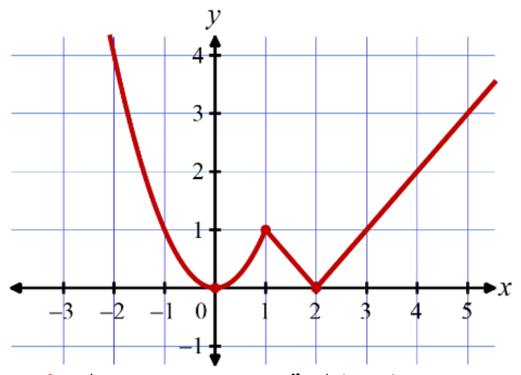
نەخشەکە سێ بەهای شلۆقی هەیە: \(\{0\,,\,1\,,\,2\}\). داتاشراوەکە لە \(x=0\) دەکاتە سفر، وە \(f'(x)\) لە \(x=1\) و \(x=2\) پێناسەنەکراوە — هەر سێکیشیان دەکەونە بواری نەخشەکەوە.
| \(-0.5\) | \(0.5\) | \(1.5\) | \(3\) | ||||
| \(x\) | \(-\infty\) | \(0\) | \(1\) | \(2\) | \(+\infty\) | ||
|---|---|---|---|---|---|---|---|
| \(f'(x)\) | − − − − | \(0\) | + + + + | پ.ن | − − − − | پ.ن | + + + + |
| \(f(x)\) | \(0\) | \(1\) | \(0\) |
26
دووری خاڵی بچووکترین کۆتایی خۆجێیی نەخشەی \(f(x)=2x^{3}+3x^{2}-12x\) لە ڕاستەهێڵی \(3x+4y=10\) بدۆزەرەوە.
2025- A\(7\)
- B\(12\)
- C\(15\)
- D\(\tfrac{64}{5}\)
شیکار
\(f'(x)=6x^{2}+6x-12 \;\Longrightarrow\; f'(x)=0\)
\(6x^{2}+6x-12=0\;\;]\div6 \;\Longrightarrow\; x^{2}+x-2=0 \;\Longrightarrow\; (x+2)(x-1)=0\)
\(x=-2\) یان \(x=1\)
| \(-3\) | \(0\) | \(2\) | |||
| \(x\) | \(-\infty\) | \(-2\) | \(1\) | \(+\infty\) | |
|---|---|---|---|---|---|
| \(f'(x)\) | + + + + | \(0\) | − − − − | \(0\) | + + + + |
| \(f(x)\) | \(20\) | \(-7\) |
\(x=1 \;\Longrightarrow\; y=2(1)^{3}+3(1)^{2}-12(1)=-7\) ب.ک.خ \((1,-7)\)
\(x=-2 \;\Longrightarrow\; y=2(-2)^{3}+3(-2)^{2}-12(-2)=20\) \((-2,20)\)
\(3x+4y-10=0\;,\quad A=3\,,\;B=4\,,\;C=-10\)
\(d=\dfrac{|Ax_1+By_1+C|}{\sqrt{A^{2}+B^{2}}}=\dfrac{|3(1)+4(-7)-10|}{\sqrt{3^{2}+4^{2}}}=\dfrac{|-35|}{\sqrt{25}}=\dfrac{35}{5}=7\)
ڕاهێنان4 – 1
لە ڕاهێنانی ١ تا ٣: بەهای داتاشراوەکە (ئەگەر هەبوو) لە هەر بەهایەکی کۆتایی بدۆزەوە.
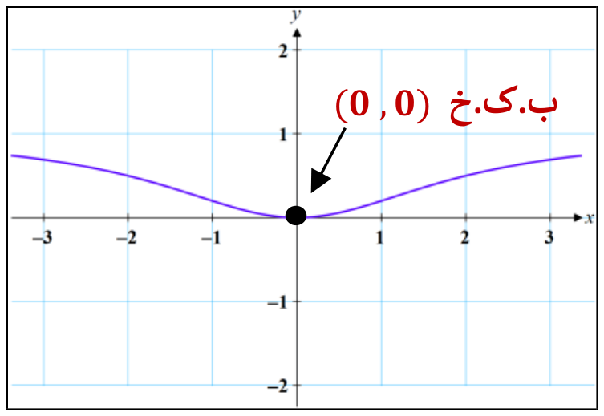
ب.ک.خ \((0,0)\) — بەهای داتاشراوە لە \((0,0)\) دەکاتە \(f'(x)=0\)
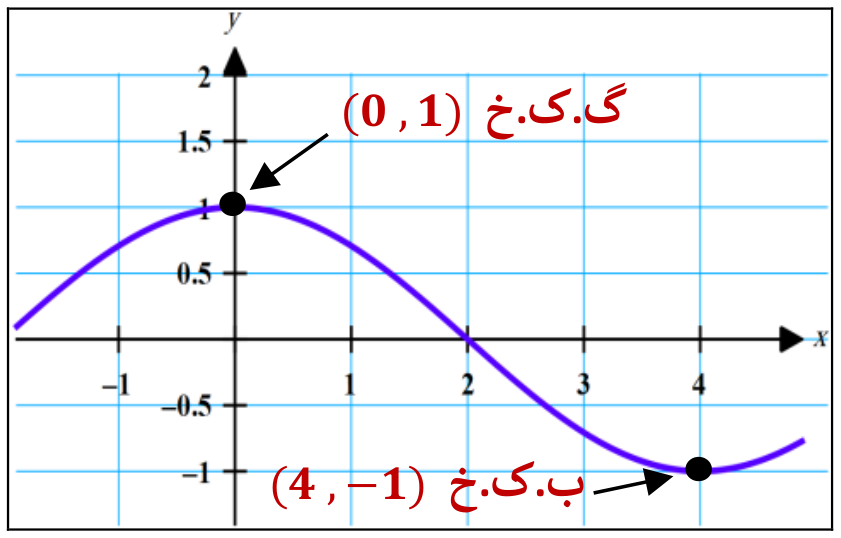
گ.ک.خ \((0,1)\)، ب.ک.خ \((4,-1)\) — لە دوو خاڵدا \(f'(x)=0\)
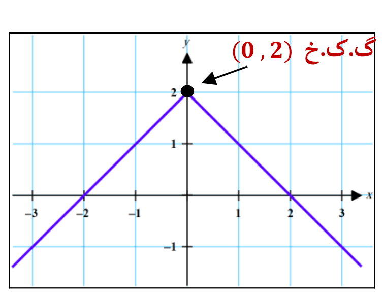
گ.ک.خ \((0,2)\) — بەهای داتاشراوە لە \((0,2)\) پێناسەنەکراوە
لە ڕاهێنانی ٤ تا ١٠: ماوەکانی ڕوو لە زیادبوون و ڕوو لە کەمبوون بدۆزەوە.
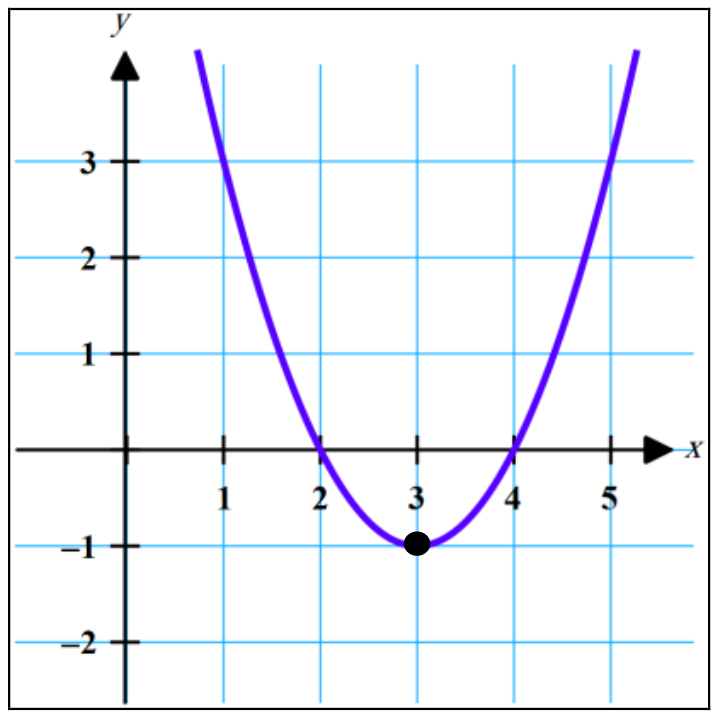
زیادبوون \(]3,+\infty[\) · کەمبوون \(]-\infty,3[\)
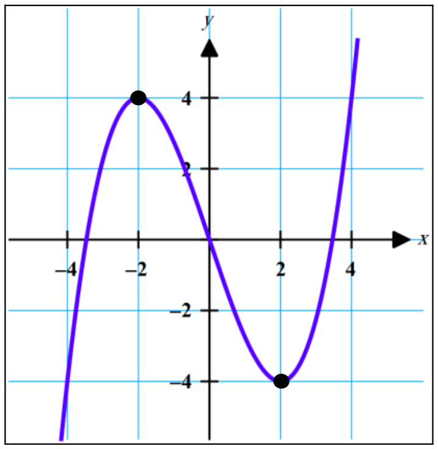
زیادبوون \(]-\infty,-2[\cup]2,+\infty[\) · کەمبوون \(]-2,2[\)
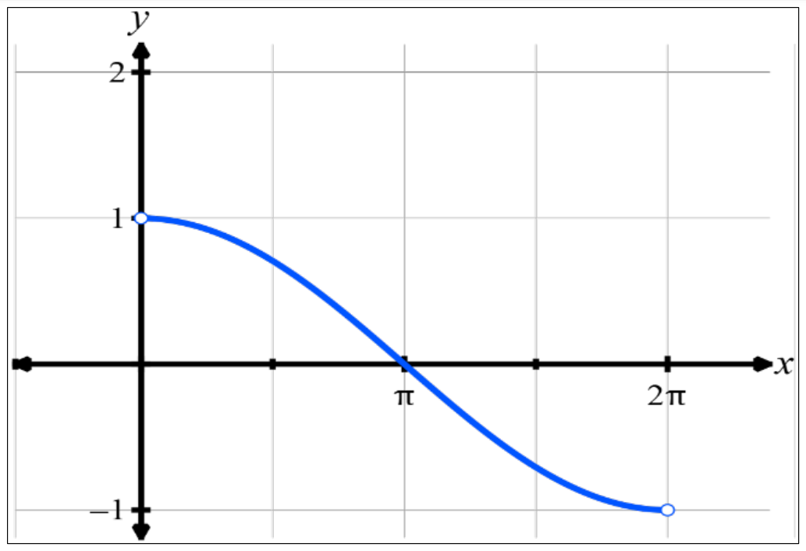
زیادبوون: نییە · کەمبوون \(]0,2\pi[\)
تێبینیئەگەر دوای وەرگرتنی داتاشراوی یەکەم بەهای \(x\)مان دەست نەکەوت (واتە \(f'(x)\neq 0\))، ئەوا دەرکەناری ستوونی بەکاردەهێنین بۆ دیاریکردنی ماوەکان — وەک \(f'(x)=\dfrac{\text{ژمارە}}{\text{نەخشە}}\).
7
\(f(x)=\dfrac{1}{x^{2}}\)
\(f'(x)=-\dfrac{2}{x^{3}} \;\Longrightarrow\; f'(x)\neq 0\;,\quad\) بوار: \(\mathbb{R}-\{0\}\)
سەرە \(=0 \;\Longrightarrow\; -2\neq 0\) کەواتە بەهای شلۆقی نییە
ژێرە \(=0 \;\Longrightarrow\; x^{3}=0 \;\Longrightarrow\; x=0\) دەرکەناری ستوونی
\(f'(-1)=\dfrac{-2}{(-1)^{3}}=2>0\)
\(f'(1)=\dfrac{-2}{(1)^{3}}=-2<0\)
| \(-1\) | \(1\) | ||
| \(x\) | \(-\infty\) | \(0\) | \(+\infty\) |
|---|---|---|---|
| \(f'(x)\) | + + + + | پێناسەنەکراوە | − − − − |
| \(f(x)\) |
ڕوو لە زیادبوون:\(\,]-\infty,0[\,\)
ڕوو لە کەمبوون:\(\,]0,+\infty[\,\)
8
\(f(x)=\dfrac{x^{2}}{x+1}\) بوار: \(\mathbb{R}-\{-1\}\)
\(f'(x)=\dfrac{(x+1)(2x)-x^{2}(1)}{(x+1)^{2}}=\dfrac{2x^{2}+2x-x^{2}}{(x+1)^{2}}=\dfrac{x^{2}+2x}{(x+1)^{2}} \;\Longrightarrow\; f'(x)=0\)
سەرە \(=0 \;\Longrightarrow\; x^{2}+2x=0 \;\Longrightarrow\; x(x+2)=0 \;\Longrightarrow\; x=0\) یان \(x=-2\) بەها شلۆقەکان
ژێرە \(=0 \;\Longrightarrow\; x+1=0 \;\Longrightarrow\; x=-1\) دەرکەناری ستوونی
| \(-3\) | \(-1.5\) | \(-0.5\) | \(1\) | ||||
| \(x\) | \(-\infty\) | \(-2\) | \(-1\) | \(0\) | \(+\infty\) | ||
|---|---|---|---|---|---|---|---|
| \(f'(x)\) | + + + + | \(0\) | − − − − | پێناسەنەکراوە | − − − − | \(0\) | + + + + |
| \(f(x)\) | \(-4\) | \(0\) |
ڕوو لە زیادبوون:\(\,]-\infty,-2[\,\cup\,]0,+\infty[\,\)
ڕوو لە کەمبوون:\(\,]-2,-1[\,\cup\,]-1,0[\,\)
9
\(f(x)=27x-x^{3}\)
\(f'(x)=27-3x^{2} \;\Longrightarrow\; f'(x)=0\)
\([27-3x^{2}=0]\;\div 3 \;\Longrightarrow\; 9-x^{2}=0\)
\(x^{2}=9 \;\Longrightarrow\; x=\mp 3\)
\(f'(-4)=27-3(-4)^{2}=-21<0\)
\(f'(1)=27-3(1)^{2}=24>0\)
\(f'(4)=27-3(4)^{2}=-21<0\)
| \(-4\) | \(0\) | \(4\) | |||
| \(x\) | \(-\infty\) | \(-3\) | \(3\) | \(+\infty\) | |
|---|---|---|---|---|---|
| \(f'(x)\) | − − − − | \(0\) | + + + + | \(0\) | − − − − |
| \(f(x)\) | \(-54\) | \(54\) |
ڕوو لە زیادبوون:\(\,]-3,3[\,\)
ڕوو لە کەمبوون:\(\,]-\infty,-3[\,\cup\,]3,+\infty[\,\)
10
\(f(x)=x-2\cos x\) لە ماوەی \(0<x<2\pi\)
2020\(f'(x)=1+2\sin x \;\Longrightarrow\; f'(x)=0\)
\(1+2\sin x=0 \;\Longrightarrow\; \sin x=-\tfrac12 \;\Longrightarrow\; x=\sin^{-1}\!\left(\tfrac12\right)=30^{\circ}=\tfrac{\pi}{6}\) گۆشەی ڕاگر
لە چارەکی سێیەم و چوارەم \(\sin\) سالبە
چ₃: \(x=\pi+\tfrac{\pi}{6}=\tfrac{7\pi}{6}\)چ₄: \(x=2\pi-\tfrac{\pi}{6}=\tfrac{11\pi}{6}\) بەها شلۆقەکان
| \(180^{\circ}\) | \(270^{\circ}\) | \(335^{\circ}\) | |||
| \(x\) | \(0\) | \(\tfrac{7\pi}{6}\) | \(\tfrac{11\pi}{6}\) | \(2\pi\) | |
|---|---|---|---|---|---|
| \(f'(x)\) | + + + + | \(0\) | − − − − | \(0\) | + + + + |
| \(f(x)\) |
ڕوو لە زیادبوون:\(\left]0,\tfrac{7\pi}{6}\right[\cup\left]\tfrac{11\pi}{6},2\pi\right[\)
ڕوو لە کەمبوون:\(\left]\tfrac{7\pi}{6},\tfrac{11\pi}{6}\right[\)
لە ڕاهێنانی ١١ تا ١٣: بەها شلۆقەکانی نەخشەکە بدۆزەوە.
11
\(f(x)=x^{2}(x-3)\)
\(f(x)=x^{3}-3x^{2}\)
\(f'(x)=3x^{2}-6x\)
\(f'(x)=0 \;\Longrightarrow\; 3x(x-2)=0\)
\(x=0\) یان \(x=2\)
بەهای شلۆق
12
\(f(x)=x^{2}(x^{2}-4)\)
\(f(x)=x^{4}-4x^{2}\)
\(f'(x)=4x^{3}-8x\)
\(f'(x)=0 \;\Longrightarrow\; 4x(x^{2}-2)=0\)
\(x=0\) یان \(x=\mp\sqrt2\)
بەهای شلۆق
13
\(f(x)=\dfrac{x-1}{x+1}\)
\(f'(x)=\dfrac{(x+1)(1)-(x-1)(1)}{(x+1)^{2}}\)
\(=\dfrac{x+1-x+1}{(x+1)^{2}}=\dfrac{2}{(x+1)^{2}}\)
\(f'(x)\neq 0\;,\quad\) سەرە \(\neq 0\)
بەهای شلۆقی نییە
تێبینیئەگەر \(f'(x)\) کەرت بوو و سەرەکەی تەنها ژمارە بوو، ئەوا یەکسان نابێت بە سفر: ئەگەر \(f'(x)=\dfrac{\text{ژمارە}}{\text{نەخشە}}\) ئەوا \(f'(x)\neq 0\).
لە ڕاهێنانی ١٤ تا ٢٢: أ) بەها شلۆقەکان بدۆزەوە. ب) ماوەکانی ڕوو لە زیادبوون و کەمبوون بدۆزەرەوە. ج) داتاشراوەی یەکەم بۆ دۆزینەوەی بەهایەکانی کۆتایی خۆجێیی بەکاربهێنە.
14
\(f(x)=x^{2}-6x\)
\(f'(x)=2x-6 \;\Longrightarrow\; f'(x)=0 \;\Longrightarrow\; 2x-6=0 \;\Longrightarrow\; x=3\) بەهای شلۆق
| \(0\) | \(4\) | ||
| \(x\) | \(-\infty\) | \(3\) | \(+\infty\) |
|---|---|---|---|
| \(f'(x)\) | − − − − | \(0\) | + + + + |
| \(f(x)\) | \(-9\) |
\(x=3 \;\Longrightarrow\; f(3)=(3)^{2}-6(3)=9-18=-9\)
ڕوو لە زیادبوون:\(\,]3,+\infty[\,\)
ڕوو لە کەمبوون:\(\,]-\infty,3[\,\)
خاڵی ب.ک.خ:\((3\,,\,-9)\)
15
\(f(x)=2x^{3}+3x^{2}-12x\)
\(f'(x)=6x^{2}+6x-12 \;\Longrightarrow\; f'(x)=0\)
\([6x^{2}+6x-12=0]\;\div 6 \;\Longrightarrow\; x^{2}+x-2=0 \;\Longrightarrow\; (x+2)(x-1)=0\)
\(x=-2\) یان \(x=1\) بەها شلۆقەکان
| \(-3\) | \(0\) | \(2\) | |||
| \(x\) | \(-\infty\) | \(-2\) | \(1\) | \(+\infty\) | |
|---|---|---|---|---|---|
| \(f'(x)\) | + + + + | \(0\) | − − − − | \(0\) | + + + + |
| \(f(x)\) | \(20\) | \(-7\) |
\(x=-2 \;\Longrightarrow\; f(-2)=2(-2)^{3}+3(-2)^{2}-12(-2)=20\)
\(x=1 \;\Longrightarrow\; f(1)=2(1)^{3}+3(1)^{2}-12(1)=-7\)
ڕوو لە زیادبوون:\(\,]-\infty,-2[\,\cup\,]1,+\infty[\,\)
ڕوو لە کەمبوون:\(\,]-2,1[\,\)
خاڵی گ.ک.خ:\((-2\,,\,20)\)
خاڵی ب.ک.خ:\((1\,,\,-7)\)
16
بەها یان بەهاکانی شلۆقی نەخشەی \(f(x)=x^{2}(3-x)\) کامەیە؟
2018- A\(x=0\)
- B\(x=-2\)
- C\(x=2\)
- Dهەردووکیان (A و C)
شیکار
\(f(x)=3x^{2}-x^{3} \;\Longrightarrow\; f'(x)=6x-3x^{2}\)
\(f'(x)=0 \;\Longrightarrow\; 3x(2-x)=0 \;\Longrightarrow\; x=0\) یان \(x=2\)
| \(-1\) | \(1\) | \(3\) | |||
| \(x\) | \(-\infty\) | \(0\) | \(2\) | \(+\infty\) | |
|---|---|---|---|---|---|
| \(f'(x)\) | − − − − | \(0\) | + + + + | \(0\) | − − − − |
| \(f(x)\) | \(0\) | \(4\) |
\(x=0 \;\Longrightarrow\; f(0)=3(0)^{2}-(0)^{3}=0\)
\(x=2 \;\Longrightarrow\; f(2)=3(2)^{2}-(2)^{3}=12-8=4\)
ڕوو لە زیادبوون:\(\,]0,2[\,\)
ڕوو لە کەمبوون:\(\,]-\infty,0[\,\cup\,]2,+\infty[\,\)
خاڵی ب.ک.خ:\((0\,,\,0)\)
خاڵی گ.ک.خ:\((2\,,\,4)\)
17
\(f(x)=\dfrac{x^{5}-5x}{5}\)
\(f'(x)=\dfrac{5x^{4}-5}{5}\)
ژێرە \(=0 \;\Longrightarrow\; 5\neq 0\)
سەرە \(=0 \;\Longrightarrow\; [5x^{4}-5=0]\;\div 5 \;\Longrightarrow\; x^{4}-1=0 \;\Longrightarrow\; x^{4}=1 \;\Longrightarrow\; x=\mp 1\) بەها شلۆقەکان
| \(-2\) | \(0\) | \(2\) | |||
| \(x\) | \(-\infty\) | \(-1\) | \(1\) | \(+\infty\) | |
|---|---|---|---|---|---|
| \(f'(x)\) | + + + + | \(0\) | − − − − | \(0\) | + + + + |
| \(f(x)\) | \(\tfrac45\) | \(-\tfrac45\) |
\(x=-1 \;\Longrightarrow\; f(-1)=\dfrac{(-1)^{5}-5(-1)}{5}=\dfrac45\)
\(x=1 \;\Longrightarrow\; f(1)=\dfrac{(1)^{5}-5(1)}{5}=-\dfrac45\)
ڕوو لە زیادبوون:\(\,]-\infty,-1[\,\cup\,]1,+\infty[\,\)
ڕوو لە کەمبوون:\(\,]-1,1[\,\)
خاڵی گ.ک.خ:\(\left(-1\,,\,\tfrac45\right)\)
خاڵی ب.ک.خ:\(\left(1\,,\,-\tfrac45\right)\)
تێبینیبواری نەخشەی ڕەگی سێجا هەمیشە \(\mathbb{R}\)ە، وە داتاشراوەکەی هەمیشە کەرتە؛ پاشان ژێرە یەکسان دەکەین بە سفر و دەبێتە بەهای شلۆق.
18
\(f(x)=x^{\frac23}-4\)
\(f'(x)=\tfrac23 x^{-\frac13}=\dfrac{2}{3\sqrt[3]{x}} \;\Longrightarrow\; f'(x)=0\)
سەرە \(=0 \;\Longrightarrow\; 2\neq 0\)
ژێرە \(=0 \;\Longrightarrow\; 3\sqrt[3]{x}=0 \;\Longrightarrow\; x=0\)
\(x=0 \;\Longrightarrow\; y=(0)^{\frac23}-4=-4\)
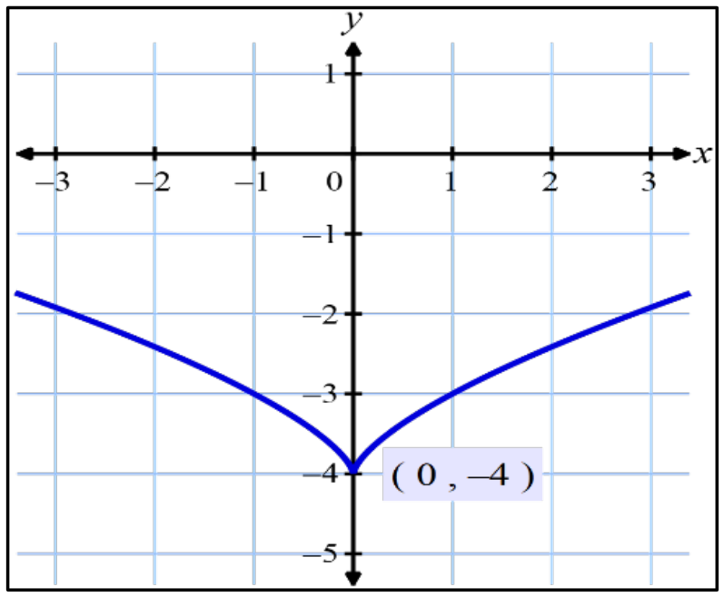
داتاشراوەی یەکەمی نەخشەکە پێناسەنەکراوە لە \(x=0\)، چونکە نوکی تیژە. نەخشەی \(f(x)=x^{\frac{a}{b}}\) نوکی تیژی هەیە لە \(x=0\) و \(x=0\) دەبێتە بەهای شلۆق — بەڵام دەبێت توانی نەخشەکە لە \(1\) کەمتر بێت، \(a\) جووت بێت و \(b\) تاک بێت.
| \(-1\) | \(1\) | ||
| \(x\) | \(-\infty\) | \(0\) | \(+\infty\) |
|---|---|---|---|
| \(f'(x)\) | − − − − | پێناسەنەکراوە | + + + + |
| \(f(x)\) | \(-4\) |
ڕوو لە زیادبوون:\(\,]0,+\infty[\,\)
ڕوو لە کەمبوون:\(\,]-\infty,0[\,\)
خاڵی ب.ک.خ:\((0\,,\,-4)\)
19
\(f(x)=5-|x-5|\)
2017ڕێگای یەکەم
ناوەوەی نرخی ڕووت یەکسان بکە بە سفر: \(x-5=0 \;\Longrightarrow\; x=5\) بەهای شلۆق
داتاشراوەی یەکەم لە \(x=5\) پێناسەنەکراوە چونکە نوکی تیژە
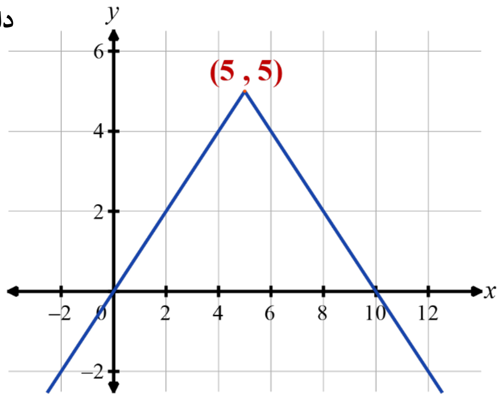
ڕێگای دووەم
\(f(x)=\begin{cases} 5-(x-5) & x\ge 5\\ 5+(x-5) & x<5\end{cases}\;\Longrightarrow\; f(x)=\begin{cases} 10-x & x\ge 5\\ x & x<5\end{cases}\)
\(f'(x)=\begin{cases} -1 & x\ge 5\\ \;\;1 & x<5\end{cases} \;\Longrightarrow\; f'(x)\neq 0\)
\(x=5 \;\Longrightarrow\; y=5-|5-5|=5\)
| \(4\) | \(6\) | ||
| \(x\) | \(-\infty\) | \(5\) | \(+\infty\) |
|---|---|---|---|
| \(f'(x)\) | + + + + | پێناسەنەکراوە | − − − − |
| \(f(x)\) | \(5\) |
ڕوو لە زیادبوون:\(\,]-\infty,5[\,\)
ڕوو لە کەمبوون:\(\,]5,+\infty[\,\)
خاڵی گ.ک.خ:\((5\,,\,5)\)
20
لە کام ماوەدا نەخشەی \(f(x)=x+\dfrac{1}{x}\) ڕوو لە کەمبوونە؟
2021- A\(]-\infty,-1[\cup]1,+\infty[\)
- B\(]-\infty,-2[\)
- C\(]2,+\infty[\)
- D\(]-1,0[\cup]0,1[\)
شیکار
\(f'(x)=1-\dfrac{1}{x^{2}}=\dfrac{x^{2}-1}{x^{2}} \;\Longrightarrow\; f'(x)=0\)
سەرە \(=0 \;\Longrightarrow\; x^{2}-1=0 \;\Longrightarrow\; x=\mp 1\) بەها شلۆقەکان
ژێرە \(=0 \;\Longrightarrow\; x^{2}=0 \;\Longrightarrow\; x=0\) دەرکەناری ستوونی
| \(-2\) | \(-0.5\) | \(0.5\) | \(2\) | ||||
| \(x\) | \(-\infty\) | \(-1\) | \(0\) | \(1\) | \(+\infty\) | ||
|---|---|---|---|---|---|---|---|
| \(f'(x)\) | + + + + | \(0\) | − − − − | پێناسەنەکراوە | − − − − | \(0\) | + + + + |
| \(f(x)\) | \(-2\) | \(2\) |
\(x=1 \;\Longrightarrow\; f(1)=1+\tfrac11=2\) · \(x=-1 \;\Longrightarrow\; f(-1)=-1+\tfrac{1}{-1}=-2\)
ڕوو لە زیادبوون:\(\,]-\infty,-1[\,\cup\,]1,+\infty[\,\)
ڕوو لە کەمبوون:\(\,]-1,0[\,\cup\,]0,1[\,\)
خاڵی ب.ک.خ:\((1\,,\,2)\)
خاڵی گ.ک.خ:\((-1\,,\,-2)\)
21
\(f(x)=\dfrac{x^{2}}{x^{2}-9}\) بوار: \(\mathbb{R}-\{\pm 3\}\)
\(f'(x)=\dfrac{(x^{2}-9)(2x)-x^{2}(2x)}{(x^{2}-9)^{2}}=\dfrac{2x^{3}-18x-2x^{3}}{(x^{2}-9)^{2}}=\dfrac{-18x}{(x^{2}-9)^{2}}\)
سەرە \(=0 \;\Longrightarrow\; -18x=0 \;\Longrightarrow\; x=0\) بەهای شلۆق
ژێرە \(=0 \;\Longrightarrow\; x^{2}-9=0 \;\Longrightarrow\; x=\pm 3\) دەرکەناری ستوونی
| \(-4\) | \(-2\) | \(1\) | \(4\) | ||||
| \(x\) | \(-\infty\) | \(-3\) | \(0\) | \(3\) | \(+\infty\) | ||
|---|---|---|---|---|---|---|---|
| \(f'(x)\) | + + + + | پێناسەنەکراوە | + + + + | \(0\) | − − − − | پێناسەنەکراوە | − − − − |
| \(f(x)\) | \(0\) |
\(x=0 \;\Longrightarrow\; f(0)=\dfrac{0}{0-9}=0\)
ڕوو لە زیادبوون:\(\,]-\infty,-3[\,\cup\,]-3,0[\,\)
ڕوو لە کەمبوون:\(\,]0,3[\,\cup\,]3,+\infty[\,\)
خاڵی گ.ک.خ:\((0\,,\,0)\)
22
\(f(x)=\dfrac{x^{2}-2x+1}{x+1}\) بوار: \(\mathbb{R}-\{-1\}\)
\(f'(x)=\dfrac{(x+1)(2x-2)-(x^{2}-2x+1)(1)}{(x+1)^{2}}\)
\(=\dfrac{2x^{2}-2x+2x-2-x^{2}+2x-1}{(x+1)^{2}}=\dfrac{x^{2}+2x-3}{(x+1)^{2}}\)
سەرە \(=0 \;\Longrightarrow\; x^{2}+2x-3=0 \;\Longrightarrow\; (x+3)(x-1)=0 \;\Longrightarrow\; x=1\) یان \(x=-3\)
ژێرە \(=0 \;\Longrightarrow\; x+1=0 \;\Longrightarrow\; x=-1\) دەرکەناری ستوونی
| \(-4\) | \(-1.5\) | \(0\) | \(2\) | ||||
| \(x\) | \(-\infty\) | \(-3\) | \(-1\) | \(1\) | \(+\infty\) | ||
|---|---|---|---|---|---|---|---|
| \(f'(x)\) | + + + + | \(0\) | − − − − | پێناسەنەکراوە | − − − − | \(0\) | + + + + |
| \(f(x)\) | \(-8\) | \(0\) |
\(x=1 \;\Longrightarrow\; f(1)=\dfrac{(1)^{2}-2(1)+1}{1+1}=\dfrac{0}{2}=0\)
\(x=-3 \;\Longrightarrow\; f(-3)=\dfrac{9+6+1}{-3+1}=\dfrac{16}{-2}=-8\)
ڕوو لە زیادبوون:\(\,]-\infty,-3[\,\cup\,]1,+\infty[\,\)
ڕوو لە کەمبوون:\(\,]-3,-1[\,\cup\,]-1,1[\,\)
خاڵی ب.ک.خ:\((1\,,\,0)\)
خاڵی گ.ک.خ:\((-3\,,\,-8)\)
23
\(f(x)=\tfrac12 x+\cos x\) لە ماوەی \(\,]0\,,\,2\pi[\,\)
\(f'(x)=\tfrac12-\sin x \;\Longrightarrow\; f'(x)=0\)
\(\tfrac12-\sin x=0 \;\Longrightarrow\; \sin x=\tfrac12 \;\Longrightarrow\; x=\sin^{-1}\!\left(\tfrac12\right)=30^{\circ}=\tfrac{\pi}{6}\) گۆشەی ڕاگر
لە چارەکی یەکەم و دووەم \(\sin\) موجەبە
چ₁: \(x=\tfrac{\pi}{6}\)چ₂: \(x=\pi-\tfrac{\pi}{6}=\tfrac{5\pi}{6}\) بەها شلۆقەکان
| \(10^{\circ}\) | \(90^{\circ}\) | \(180^{\circ}\) | |||
| \(x\) | \(0\) | \(\tfrac{\pi}{6}\) | \(\tfrac{5\pi}{6}\) | \(2\pi\) | |
|---|---|---|---|---|---|
| \(f'(x)\) | + + + + | \(0\) | − − − − | \(0\) | + + + + |
| \(f(x)\) | \(\tfrac{\pi+6\sqrt3}{12}\) | \(\tfrac{5\pi-6\sqrt3}{12}\) |
\(x=\tfrac{\pi}{6} \;\Longrightarrow\; f=\tfrac12\left(\tfrac{\pi}{6}\right)+\cos\left(\tfrac{\pi}{6}\right)=\tfrac{\pi}{12}+\tfrac{\sqrt3}{2}=\tfrac{\pi+6\sqrt3}{12}\)
\(x=\tfrac{5\pi}{6} \;\Longrightarrow\; f=\tfrac12\left(\tfrac{5\pi}{6}\right)+\cos\left(\tfrac{5\pi}{6}\right)=\tfrac{5\pi}{12}-\tfrac{\sqrt3}{2}=\tfrac{5\pi-6\sqrt3}{12}\)
ڕوو لە زیادبوون:\(\left]0,\tfrac{\pi}{6}\right[\cup\left]\tfrac{5\pi}{6},2\pi\right[\)
ڕوو لە کەمبوون:\(\left]\tfrac{\pi}{6},\tfrac{5\pi}{6}\right[\)
خاڵی گ.ک.خ:\(\left(\tfrac{\pi}{6},\tfrac{\pi+6\sqrt3}{12}\right)\)
خاڵی ب.ک.خ:\(\left(\tfrac{5\pi}{6},\tfrac{5\pi-6\sqrt3}{12}\right)\)
24
\(f(x)=\sin x\,\cos x\) لە ماوەی \(\,]0\,,\,2\pi[\,\)
\(f'(x)=(\sin x)(-\sin x)+(\cos x)(\cos x)=-\sin^{2}x+\cos^{2}x\)
\(f'(x)=0 \;\Longrightarrow\; -\sin^{2}x+\cos^{2}x=0 \;\Longrightarrow\; [\sin^{2}x=\cos^{2}x]\div\cos^{2}x\)
\([\tan^{2}x=1]\;*\sqrt{\;} \;\Longrightarrow\; \tan x=\mp 1 \;\Longrightarrow\; x=\tan^{-1}(1)=45^{\circ}=\tfrac{\pi}{4}\) گۆشەی ڕاگر
هەر چوار چارەکەکە وەردەگرین، چونکە موجەب و سالبە
چ₁: \(\tfrac{\pi}{4}\) چ₂: \(\pi-\tfrac{\pi}{4}=\tfrac{3\pi}{4}\) چ₃: \(\pi+\tfrac{\pi}{4}=\tfrac{5\pi}{4}\) چ₄: \(2\pi-\tfrac{\pi}{4}=\tfrac{7\pi}{4}\)
| \(30^{\circ}\) | \(90^{\circ}\) | \(180^{\circ}\) | \(300^{\circ}\) | \(330^{\circ}\) | |||||
| \(x\) | \(0\) | \(\tfrac{\pi}{4}\) | \(\tfrac{3\pi}{4}\) | \(\tfrac{5\pi}{4}\) | \(\tfrac{7\pi}{4}\) | \(2\pi\) | |||
|---|---|---|---|---|---|---|---|---|---|
| \(f'(x)\) | + + + + | \(0\) | − − − − | \(0\) | + + + + | \(0\) | − − − − | \(0\) | + + + + |
| \(f(x)\) | \(\tfrac12\) | \(-\tfrac12\) | \(\tfrac12\) | \(-\tfrac12\) |
ڕوو لە زیادبوون:\(\left]0,\tfrac{\pi}{4}\right[\cup\left]\tfrac{3\pi}{4},\tfrac{5\pi}{4}\right[\cup\left]\tfrac{7\pi}{4},2\pi\right[\)
ڕوو لە کەمبوون:\(\left]\tfrac{\pi}{4},\tfrac{3\pi}{4}\right[\cup\left]\tfrac{5\pi}{4},\tfrac{7\pi}{4}\right[\)
\(x=\tfrac{\pi}{4} \;\Longrightarrow\; f=\tfrac12\) گ.ک.خ \(\left(\tfrac{\pi}{4},\tfrac12\right)\)
\(x=\tfrac{3\pi}{4} \;\Longrightarrow\; f=-\tfrac12\) ب.ک.خ \(\left(\tfrac{3\pi}{4},-\tfrac12\right)\)
\(x=\tfrac{5\pi}{4} \;\Longrightarrow\; f=\tfrac12\) گ.ک.خ \(\left(\tfrac{5\pi}{4},\tfrac12\right)\)
\(x=\tfrac{7\pi}{4} \;\Longrightarrow\; f=-\tfrac12\) ب.ک.خ \(\left(\tfrac{7\pi}{4},-\tfrac12\right)\)
مەرجەکانی بوونی بەهای بچووکترین کۆتایی خۆجێیی
بۆ بوونی بچووکترین کۆتایی خۆجێیی لەسەر وێنە، دەبێت هەردوو مەرجەکە تێدابێت
- دەبێت خاڵەکەی خوارەوە ڕەش کرابێتەوە (تۆخ بێت).
- دەبێت خاڵەکە لە نزمترین شوێنی وێنەکە بێت.
ئاگاداریئەگەر یەکێک لەو دوو مەرجە تێدا نەبێت، دەڵێین بەهای بچووکترین کۆتایی خۆجێیی نییە.
لە ڕاهێنانی ٢٥ تا ٢٨: دیاریبکە ئەگەر نەخشەکە بەهای بچووکترین کۆتایی خۆجێیی لە ماوەی \(\,]a\,,\,b[\,\) دا هەیە، بەپێی ڕوونکردنەوەکەی لەو ماوەیەدا.
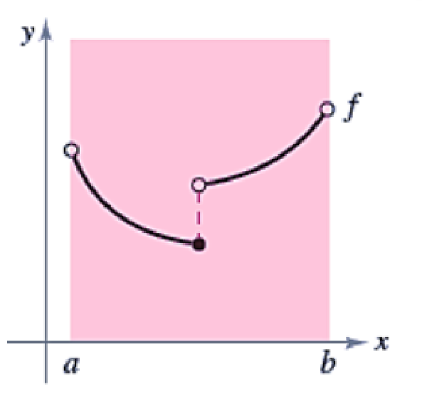
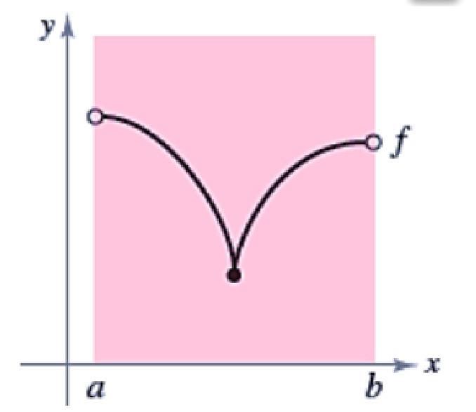
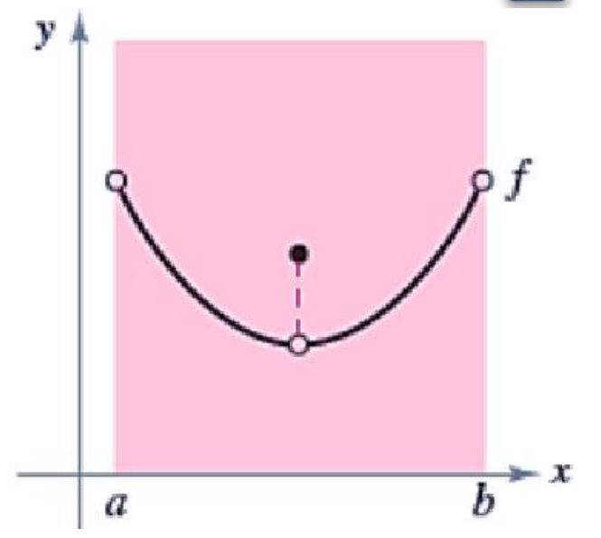
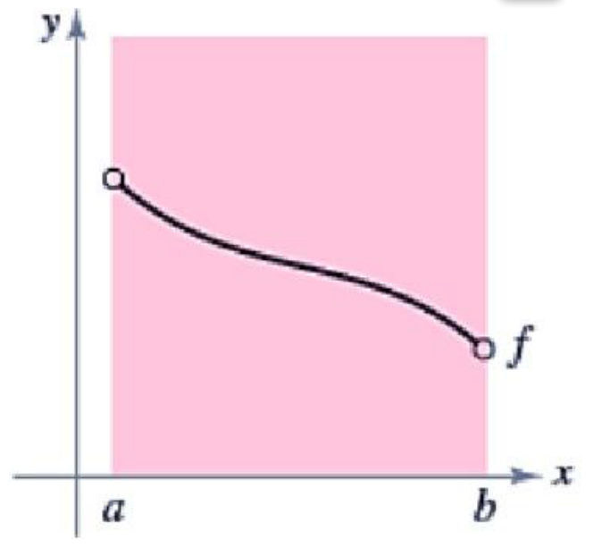
کتێبی ڕاهێنان (ل ١٣) — لە ڕاهێنانی ١٣ تا ١٦: دیاریبکە ئەگەر نەخشەکە بەهای بچووکترین کۆتایی خۆجێیی لە ماوەی \(\,]a\,,\,b[\,\) دا هەیە.
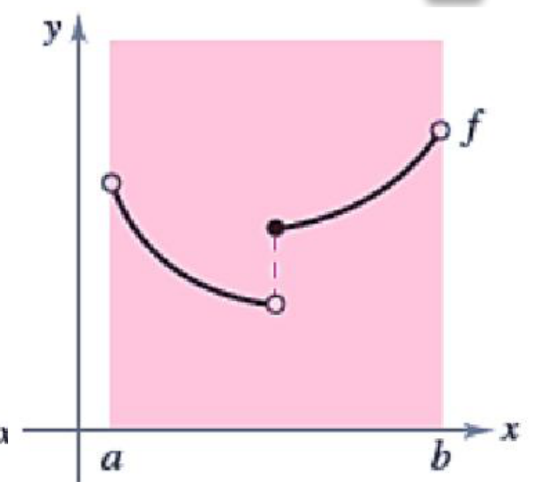
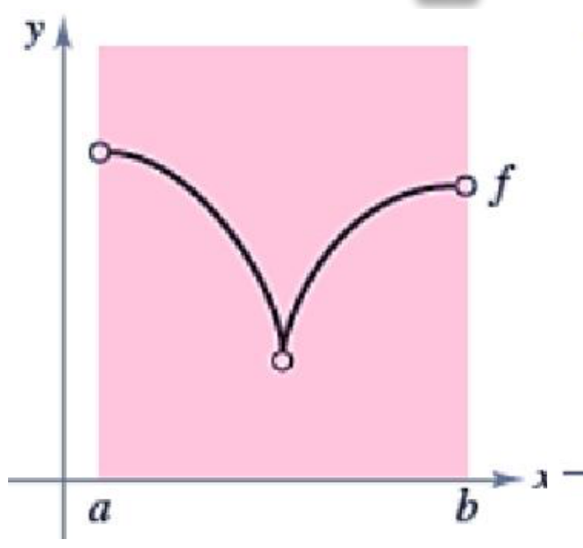
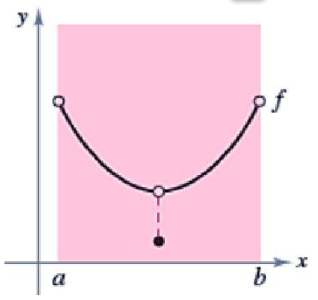
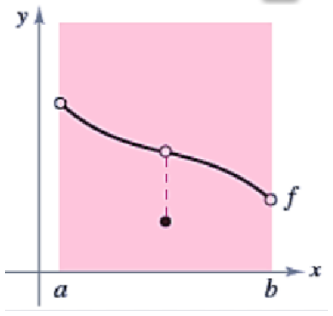
هەندێک پرسیاری وەزاریMinistry Questions
1
نەخشەی \(f(x)=\sin x+\cos x\) لە ماوەی \(\,]0\,,\,2\pi[\,\) بەکاربهێنە بۆ وەڵامدانەوەی ئەو پرسیارانەی دێن.
2011ماوەی ڕوو لە زیادبوونی نەخشەکە دەکاتە:
- A\(\left]0,\tfrac{\pi}{4}\right[\)
- B\(\left]\tfrac{\pi}{4},\tfrac{5\pi}{4}\right[\)
- C\(\left]0,\tfrac{3\pi}{4}\right[\)
- D\(\left]\tfrac{7\pi}{4},2\pi\right[\)
ماوەی ڕوو لە کەمبوونی نەخشەکە دەکاتە:
- A\(\left]0,\tfrac{\pi}{4}\right[\)
- B\(\left]\tfrac{\pi}{4},\tfrac{5\pi}{4}\right[\)
- C\(\left]0,\tfrac{3\pi}{4}\right[\)
- D\(\left]\tfrac{7\pi}{4},2\pi\right[\)
خاڵی شلۆقی نەخشەکە دەکاتە:
- A\(\left(\tfrac{\pi}{4},-\sqrt2\right)\)
- B\(\left(\tfrac{\pi}{4},0\right)\)
- C\(\left(\tfrac{5\pi}{4},-\sqrt2\right)\)
- D\(\left(\tfrac{5\pi}{4},0\right)\)
شیکار
\(f'(x)=\cos x-\sin x \;\Longrightarrow\; f'(x)=0\)
\([\sin x-\cos x=0]\;\div\cos x \;\Longrightarrow\; \tan x=1 \;\Longrightarrow\; x=\tan^{-1}(1)=45^{\circ}=\tfrac{\pi}{4}\) گۆشەی ڕاگر
لە چارەکی یەکەم و سێیەم \(\tan\) موجەبە
چ₁: \(x=\tfrac{\pi}{4}\)چ₃: \(x=\pi+\tfrac{\pi}{4}=\tfrac{5\pi}{4}\)
| \(30^{\circ}\) | \(90^{\circ}\) | \(180^{\circ}\) | |||
| \(x\) | \(0\) | \(\tfrac{\pi}{4}\) | \(\tfrac{5\pi}{4}\) | \(2\pi\) | |
|---|---|---|---|---|---|
| \(f'(x)\) | + + + + | \(0\) | − − − − | \(0\) | + + + + |
| \(f(x)\) | \(گ\) | \(ب\) |
\(x=\tfrac{\pi}{4} \;\Longrightarrow\; f=\sin\tfrac{\pi}{4}+\cos\tfrac{\pi}{4}=\tfrac{1}{\sqrt2}+\tfrac{1}{\sqrt2}=\tfrac{2}{\sqrt2}=\sqrt2\)
\(x=\tfrac{5\pi}{4} \;\Longrightarrow\; f=-\tfrac{1}{\sqrt2}-\tfrac{1}{\sqrt2}=-\tfrac{2}{\sqrt2}=-\sqrt2\)
دوو خاڵی شلۆق:\(\left(\tfrac{\pi}{4},\sqrt2\right)\) و \(\left(\tfrac{5\pi}{4},-\sqrt2\right)\)
ڕوو لە زیادبوون:\(\left]0,\tfrac{\pi}{4}\right[\cup\left]\tfrac{5\pi}{4},2\pi\right[\)
ڕوو لە کەمبوون:\(\left]\tfrac{\pi}{4},\tfrac{5\pi}{4}\right[\)
2
ڕوونکردنەوەی نەخشەی \(f(x)\) لە وێنەی بەرامبەر بەکاربهێنە بۆ دیاریکردنی ئەمانەی دێن.
2012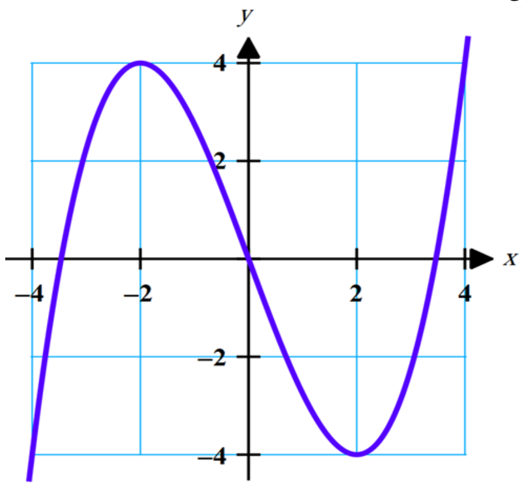
ماوەی ڕوو لە زیادبوونەکە کامەیە:
- A\(]0,+\infty[\)
- B\(]-2,2[\)
- C\(]-\infty,-2[\,\cup\,]2,+\infty[\)
- D\(]-\infty,0[\)
ماوەی ڕوو لە کەمبوونەکە کامەیە:
- A\(]0,+\infty[\)
- B\(]-2,2[\)
- C\(]-\infty,-2[\,\cup\,]2,+\infty[\)
- D\(]-\infty,0[\)
تێبینیهەرکاتێک لە پرسیاردا هاتووە «لە کام ماوەدا \(f'(x)\) موجەبە» واتا ڕوو لە زیادبوون، وە ئەگەر هاتووە «سالبە» واتا ڕوو لە کەمبوون.
3
ڕوونکردنەوەی نەخشەی \(f(x)\) لە وێنەی بەرامبەر بەکاربهێنە بۆ دیاریکردنی ئەمانەی دێن.
2013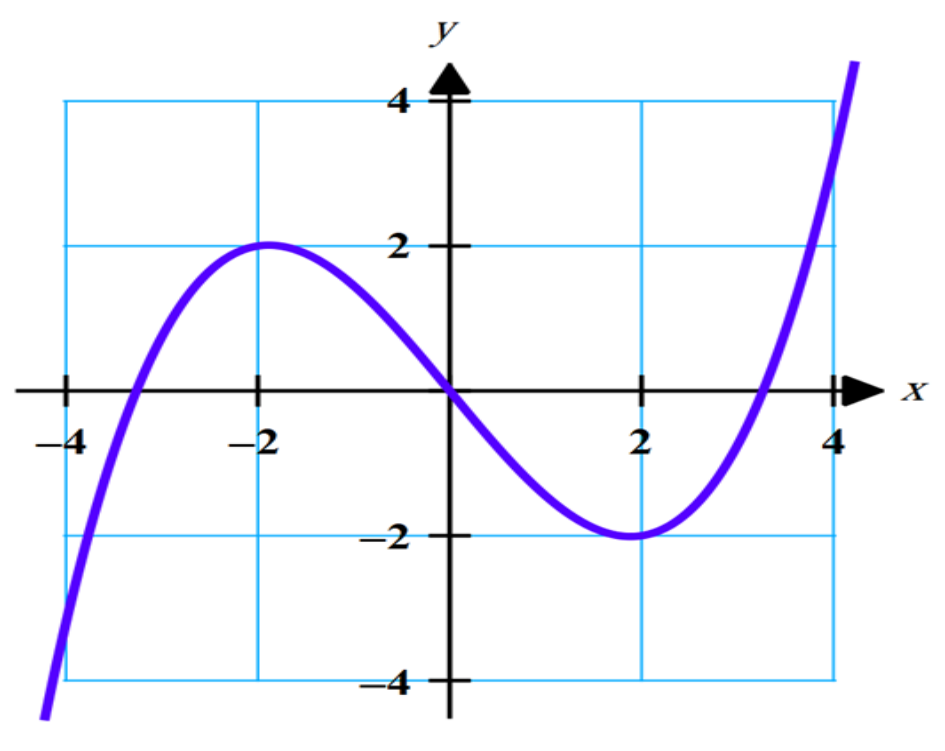
کام لە بەهایەکانی \(x\) وادەکات \(f'(x)\) بکاتە سفر:
- A\(]-2,2[\)
- B\(-2\,,\,2\)
- C\([-2,2]\)
- D\(-2.5\,,\,2.5\)
کام لە بەهایەکانی \(x\) وادەکات \(f'(x)\) بکاتە سالب:
- A\(-2\,,\,2\)
- B\([-2,2]\)
- C\(]-\infty,-2]\,\cup\,[2,+\infty[\)
- D\(]-2,2[\)
کام لە بەهایەکانی \(x\) وادەکات \(f'(x)\) بکاتە موجەب:
- A\(-2\,,\,2\)
- B\([-2,2]\)
- C\(]-\infty,-2[\,\cup\,]2,+\infty[\)
- D\(]-2,2[\)
4
ڕوونکردنەوەی نەخشەی \(f(x)\) لە وێنەی بەرامبەر بەکاربهێنە بۆ دیاریکردنی ئەمانەی دێن.
2015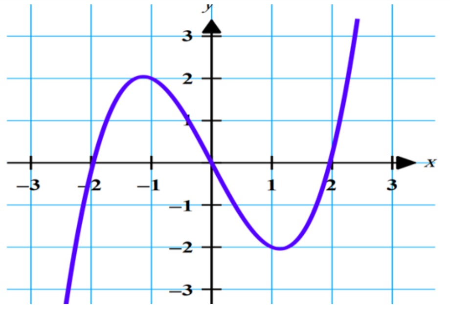
کام لە بەهایەکانی \(x\) وادەکات \(f'(x)\) بکاتە سالب:
- A\(]2,+\infty[\)
- B\(]-2,2[\)
- C\(]-\infty,-2[\)
- Dهیچ کامیان
لە کام ماوەدا \(f(x)\) ڕوو لە زیادبوونە:
- A\(]-2,2[\)
- B\(]0,+\infty[\)
- C\(]-\infty,0[\)
- D\(]2,+\infty[\)
5
بەهای \(f'(-1)\) کامەیە؟
2017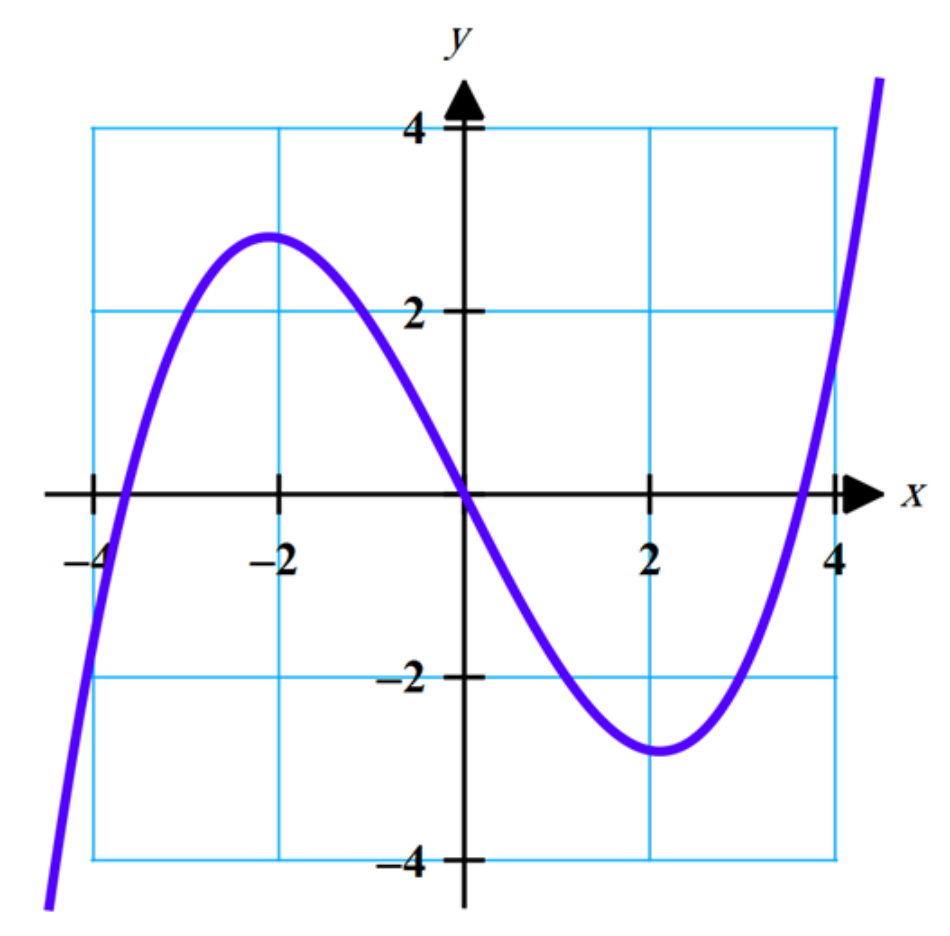
- A\(-2\)
- B\(2\)
- C\(0\)
- Dپێناسەنەکراوە
لە گەورەترین و بچووکترین کۆتایی خۆجێیی لەسەر وێنە، داتاشراوە دەکاتە سفر — بەڵام داتاشراوە پێناسەنەکراوە ئەگەر نوکی تیژ بوو.
6
وێنەی ڕوونکردنەوەی نەخشەی \(f\) ی بەرامبەر بەکاربهێنە بۆ وەڵامدانەوەی پرسیارەکانی (١ و ٢).
2018 بەرایی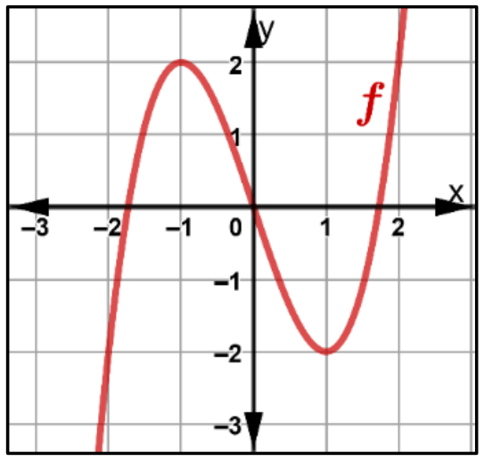
١ ماوەی ڕوو لە کەمبوون کامەیە؟
- A\(]-1,1[\)
- B\(]-\infty,-1[\)
- C\(]1,+\infty[\)
- D\(]0,+\infty[\)
٢ بەهای بچووکترین خۆجێیی کامەیە؟
- A\(4\)
- B\(-4\)
- C\(2\)
- D\(-2\)
7
بەپێی وێنەی بەرامبەر، ماوەی ڕوو لە کەمبوونی نەخشەی \(f\) بدۆزەوە.
2023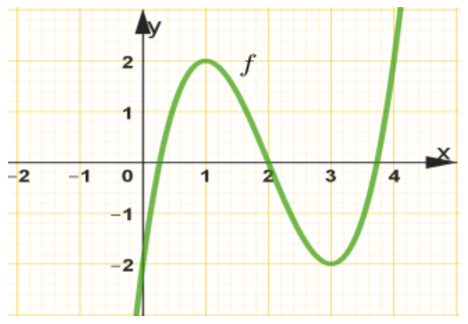
- A\(]-2,2[\)
- B\(]-1,0[\)
- C\(]-1,+\infty[\)
- D\(]1,3[\)
بۆ زانین: ئەگەر نەخشەیەک توانی جووت بوو و بەردەمی سالب بوو، ئەوا هەر نرخێک بدەیت ئەنجامەکەی هەر دەبێتە سالب — بۆ نموونە \(f(x)=-x^{2}\) یان \(f(x)=-x^{4}\).
8
وێنەی ڕوونکردنەوەی ئەو نەخشەیە کامەیە کە هەموو بەهایەکانی داتاشراوەکەی سالب دەبێت؟
2017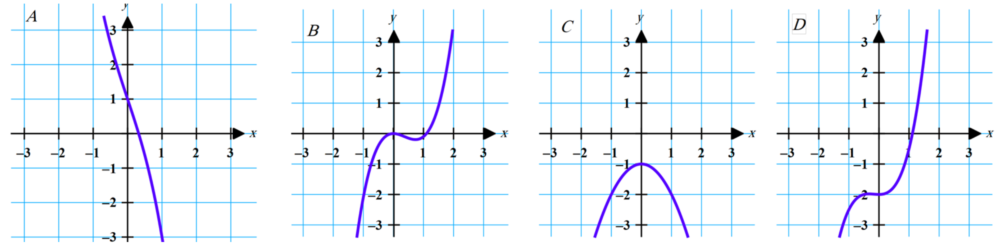
شیکار
ئەگەر سەیری وێنەی A بکەین، دەبینین نەخشەکە سێجایە بۆیە داتاشراوەکەی دەبێتە نەخشەیەکی دووجا. هەروەها وێنەکە کەوتۆتە چوارەکی دووەم و چوارەم، بۆیە بەردەمی نەخشەکە سالبە — کەواتە نەخشەکە دەبێتە \(f'(x)=-x^{2}\) و C وەڵامە.
9
ڕوونکردنەوەی نەخشەی \(f(x)\) دیاریبکە بەهۆی ڕوونکردنەوەی نەخشەی داتاشراوی یەکەم \(f'(x)\).
2020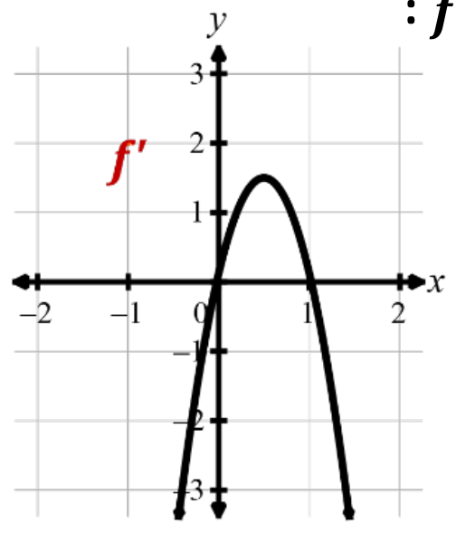
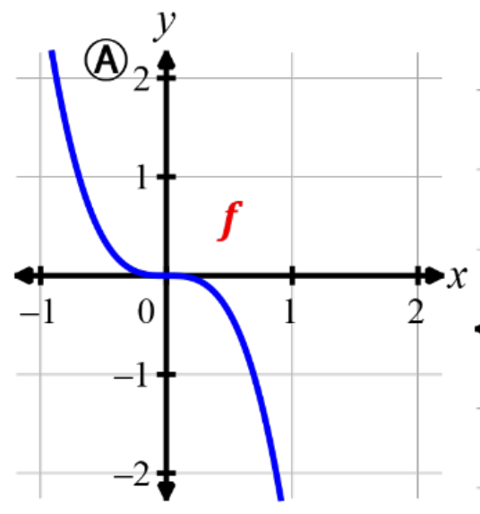
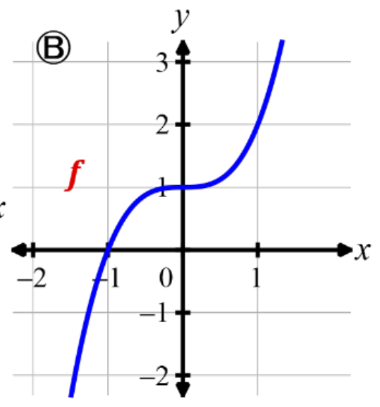
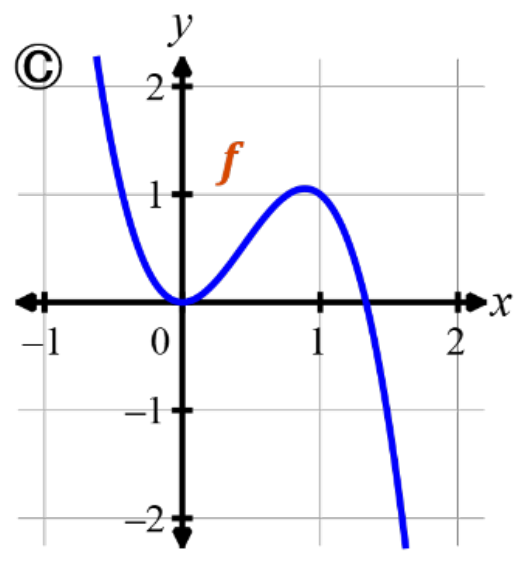
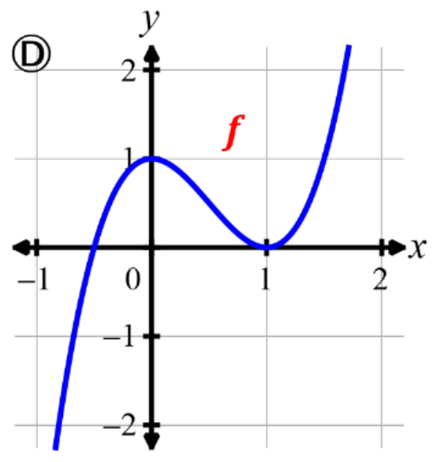
لە وێنەدا ئەگەر \(f\) ڕوو لە زیادبوون بوو، ئەوا \(f'\) دەکەوێتە سەرەوەی تەوەرەی \(x\) واتا \(f'(x)>0\) — بە پێچەوانەشەوە ڕاستە.
شیکار
لە پرسیاردا وێنەی داتاشراوەکە دراوە و داوای وێنەی نەخشە بنەڕەتییەکە دەکات. سەرەتا تەماشای وێنەی \(f'\) دەکەین: ئەوەی خوارەوەیە دەبێت وێنەی \(f\) سالب بێت، بۆیە B و D فەرامۆش دەکەین چونکە موجەبن. هەروەها وێنەی \(f'\) لە ماوەی \(\,]0,1[\,\) دەکەوێتە سەرەوەی تەوەرەی \(x\)، بۆیە دەبێت وێنەی \(f\) لە هەمان ماوەدا ڕوو لە زیادبوون بێت — کەواتە C دەبێتە وەڵام.
ناو
بەروار
پۆل
4–1
ڕاهێنـانFirst Derivative Test — Worksheet
لە ڕاهێنانی ١ تا ٤: ماوەکانی ڕوو لە زیادبوون و ڕوو لە کەمبوون دیاریبکە.
1\(f(x)=4x+\tfrac{1}{x}\)
2\(f(x)=x^{3}-12x+1\)
3\(f(x)=x\,e^{x}\)
4\(f(x)=\tfrac{\ln x}{x}\)
لە ڕاهێنانی ٥ تا ٨ ئەمانە بدۆزەوە: أ) بەها شلۆقەکان ب) ماوەکانی ڕوو لە زیادبوون و کەمبوون ج) تاقیکردنەوەی داتاشراوی یەکەم بەکاربهێنە بۆ دۆزینەوەی بەهایەکانی ئەوەپەڕی خۆجێیەتی د) ڕوونکردنەوەی نەخشەکە بۆ پاسەدانکردنی ڕاستی وەڵامەکەت بکێشە.
5\(f(x)=x^{2}+4x\)
6\(f(x)=2x^{3}-3x^{2}-1\)
7\(f(x)=-4x+\tfrac{4}{x}\)
8\(f(x)=\tfrac{x^{2}}{x^{2}-4}\)
لە ڕاهێنانی ٩ تا ١٢: هەمان داواکارییەکانی پرسیارەکانی پێشوو لە ماوەی \([0\,,\,2\pi]\) جێبەجێ بکە.
9\(f(x)=\tfrac{x}{2}-\sin x\)
10\(f(x)=\sin 2x\)
11\(f(x)=x^{2}+\cos x\)
12\(f(x)=\tfrac{\cos x}{1+\sin^{2}x}\)
لە ڕاهێنانی ١٣ تا ١٦: دیاریبکە ئەگەر نەخشەکە بەهای بچووکترین کۆتایی خۆجێیی لە ماوەی \(\,]a\,,\,b[\,\) دا هەیە، بەپێی ڕوونکردنەوەکەی لەو ماوەیەدا.
وەڵامی کتێبی ڕاهێنان4 – 1
1
\(f(x)=4x+\dfrac{1}{x}\)
\(f(x)=4x+x^{-1} \;\Longrightarrow\; f'(x)=4-x^{-2}=4-\dfrac{1}{x^{2}}=\dfrac{4x^{2}-1}{x^{2}} \;\Longrightarrow\; f'(x)=0\)
سەرە \(=0 \;\Longrightarrow\; 4x^{2}-1=0 \;\Longrightarrow\; x^{2}=\tfrac14 \;\Longrightarrow\; x=\pm\tfrac12\)
ژێرە \(=0 \;\Longrightarrow\; x^{2}=0 \;\Longrightarrow\; x=0\;\notin\) بوار
| \(-1\) | \(-0.3\) | \(0.3\) | \(1\) | ||||
| \(x\) | \(-\infty\) | \(-\tfrac12\) | \(0\) | \(\tfrac12\) | \(+\infty\) | ||
|---|---|---|---|---|---|---|---|
| \(f'(x)\) | + + + + | \(0\) | − − − − | پێناسەنەکراوە | − − − − | \(0\) | + + + + |
| \(f(x)\) | \(گ\) | \(ب\) |
ڕوو لە زیادبوون:\(\left]-\infty,-\tfrac12\right[\cup\left]\tfrac12,+\infty\right[\)
ڕوو لە کەمبوون:\(\left]-\tfrac12,0\right[\cup\left]0,\tfrac12\right[\)
2
\(f(x)=x^{3}-12x+1\)
\(f'(x)=3x^{2}-12 \;\Longrightarrow\; f'(x)=0\)
\(3x^{2}-12=0 \;\Longrightarrow\; 3x^{2}=12 \;\Longrightarrow\; x^{2}=\tfrac{12}{3}=4 \;\Longrightarrow\; x=\pm 2\)
| \(-3\) | \(0\) | \(3\) | |||
| \(x\) | \(-\infty\) | \(-2\) | \(2\) | \(+\infty\) | |
|---|---|---|---|---|---|
| \(f'(x)\) | + + + + | \(0\) | − − − − | \(0\) | + + + + |
| \(f(x)\) | \(گ\) | \(ب\) |
ڕوو لە زیادبوون:\(\,]-\infty,-2[\,\cup\,]2,+\infty[\,\)
ڕوو لە کەمبوون:\(\,]-2,2[\,\)
5
\(f(x)=x^{2}+4x\)
\(f'(x)=2x+4 \;\Longrightarrow\; f'(x)=0 \;\Longrightarrow\; 2x+4=0 \;\Longrightarrow\; x=-2\)
| \(-3\) | \(0\) | ||
| \(x\) | \(-\infty\) | \(-2\) | \(+\infty\) |
|---|---|---|---|
| \(f'(x)\) | − − − − | \(0\) | + + + + |
| \(f(x)\) | \(-4\) |
- أ) بەهای شلۆقی نەخشەکە بریتییە لە \(x=-2\).
- ب) نەخشەکە ڕوو لە زیادبوونە لە ماوەی \(\,]-2,+\infty[\,\) و ڕوو لە کەمبوونە لە ماوەی \(\,]-\infty,-2[\,\).
- ج) خاڵی \((-2\,,\,-4)\) خاڵی شلۆقە و خاڵی بچووکترین کۆتایی خۆجێییە (ب.ک.خ).
6
\(f(x)=2x^{3}-3x^{2}-1\)
\(f'(x)=6x^{2}-6x \;\Longrightarrow\; f'(x)=0\)
\(6x^{2}-6x=0 \;\Longrightarrow\; 6x(x-1)=0\)
\(6x=0 \;\Longrightarrow\; x=0\) یان \(x-1=0 \;\Longrightarrow\; x=1\) بەها شلۆقەکان
| \(-1\) | \(0.5\) | \(2\) | |||
| \(x\) | \(-\infty\) | \(0\) | \(1\) | \(+\infty\) | |
|---|---|---|---|---|---|
| \(f'(x)\) | + + + + | \(0\) | − − − − | \(0\) | + + + + |
| \(f(x)\) | \(-1\) | \(-2\) |
- أ) بەها شلۆقەکان بریتین لە \(x=0\) و \(x=1\).
- ب) ڕوو لە زیادبوونە لە \(\,]-\infty,0[\,\cup\,]1,+\infty[\,\) و ڕوو لە کەمبوونە لە \(\,]0,1[\,\).
- ج) خاڵی \((0\,,\,-1)\) خاڵی شلۆقە و خاڵی گەورەترین کۆتایی خۆجێییە (گ.ک.خ)، وە خاڵی \((1\,,\,-2)\) خاڵی شلۆقە و خاڵی بچووکترین کۆتایی خۆجێییە (ب.ک.خ).
7
\(f(x)=-4x+\dfrac{4}{x}\)
\(f(x)=-4x+4x^{-1} \;\Longrightarrow\; f'(x)=-4-4x^{-2}=-4-\dfrac{4}{x^{2}}=\dfrac{-4x^{2}-4}{x^{2}}\)
سەرە \(=0 \;\Longrightarrow\; -4x^{2}-4=0 \;\Longrightarrow\; x^{2}\neq -1\)
ژێرە \(=0 \;\Longrightarrow\; x^{2}=0 \;\Longrightarrow\; x=0\;\notin\) بوار
| \(-1\) | \(1\) | ||
| \(x\) | \(-\infty\) | \(0\) | \(+\infty\) |
|---|---|---|---|
| \(f'(x)\) | − − − − | پێناسەنەکراوە | − − − − |
| \(f(x)\) |
- أ) نەخشەکە بەهای شلۆقی نییە.
- ب) نەخشەکە ڕوو لە کەمبوونە لە ماوەی \(\,]-\infty,0[\,\cup\,]0,+\infty[\,\).
- ج) نەخشەکە بەهای گەورەترین و بچووکترین کۆتایی خۆجێیی نییە.
8
\(f(x)=\dfrac{x^{2}}{x^{2}-4}\)
\(f'(x)=\dfrac{(x^{2}-4)(2x)-x^{2}(2x)}{(x^{2}-4)^{2}}=\dfrac{2x^{3}-8x-2x^{3}}{(x^{2}-4)^{2}}=\dfrac{-8x}{(x^{2}-4)^{2}}\)
سەرە \(=0 \;\Longrightarrow\; -8x=0 \;\Longrightarrow\; x=0\) بەهای شلۆق
ژێرە \(=0 \;\Longrightarrow\; (x^{2}-4)^{2}=0 \;\Longrightarrow\; x=\pm 2\;\notin\) بوار
| \(-4\) | \(-1\) | \(1\) | \(4\) | ||||
| \(x\) | \(-\infty\) | \(-2\) | \(0\) | \(2\) | \(+\infty\) | ||
|---|---|---|---|---|---|---|---|
| \(f'(x)\) | + + + + | پێناسەنەکراوە | + + + + | \(0\) | − − − − | پێناسەنەکراوە | − − − − |
| \(f(x)\) | \(0\) |
- أ) بەهای شلۆقی نەخشەکە بریتییە لە \(x=0\).
- ب) ڕوو لە زیادبوونە لە \(\,]-\infty,-2[\,\cup\,]-2,0[\,\) و ڕوو لە کەمبوونە لە \(\,]0,2[\,\cup\,]2,+\infty[\,\).
- ج) خاڵی \((0\,,\,0)\) خاڵی شلۆقە و خاڵی گەورەترین کۆتایی خۆجێییە (گ.ک.خ).
9
\(f(x)=\dfrac{x}{2}-\sin x\)
\(f'(x)=\tfrac12-\cos x \;\Longrightarrow\; f'(x)=0 \;\Longrightarrow\; \cos x=\tfrac12\)
\(x=\cos^{-1}\tfrac12 \;\Longrightarrow\; x=60^{\circ}=\tfrac{\pi}{3}\) گۆشەی ڕاگر
لە چارەکی یەکەم و چوارەم \(\cos\) موجەبە
چ₁: \(x=\tfrac{\pi}{3}\)چ₄: \(x=2\pi-\tfrac{\pi}{3}=\tfrac{5\pi}{3}\)
| \(30^{\circ}\) | \(90^{\circ}\) | \(300^{\circ}\) | |||
| \(x\) | \(0\) | \(\tfrac{\pi}{3}\) | \(\tfrac{5\pi}{3}\) | \(2\pi\) | |
|---|---|---|---|---|---|
| \(f'(x)\) | − − − − | \(0\) | + + + + | \(0\) | − − − − |
| \(f(x)\) | \(\tfrac{\pi}{6}-\tfrac{\sqrt3}{2}\) | \(\tfrac{5\pi}{6}+\tfrac{\sqrt3}{2}\) |
- أ) بەها شلۆقەکان بریتین لە \(x=\tfrac{\pi}{3}\) و \(x=\tfrac{5\pi}{3}\).
- ب) ڕوو لە زیادبوونە لە \(\left]\tfrac{\pi}{3},\tfrac{5\pi}{3}\right[\) و ڕوو لە کەمبوونە لە \(\left]0,\tfrac{\pi}{3}\right[\cup\left]\tfrac{5\pi}{3},2\pi\right[\).
- ج) خاڵی \(\left(\tfrac{5\pi}{3},\tfrac{5\pi}{6}+\tfrac{\sqrt3}{2}\right)\) گ.ک.خە، وە خاڵی \(\left(\tfrac{\pi}{3},\tfrac{\pi}{6}-\tfrac{\sqrt3}{2}\right)\) ب.ک.خە.
10
\(f(x)=\sin 2x\)
\(f'(x)=2\cos 2x \;\Longrightarrow\; f'(x)=0 \;\Longrightarrow\; \cos 2x=0\)
\(2x=\tfrac{\pi}{2}\,,\,\tfrac{3\pi}{2}\,,\,\tfrac{5\pi}{2}\,,\,\tfrac{7\pi}{2}\) هەردوولا لێکدانی \(\tfrac12\) دەکەین
\(x=\tfrac{\pi}{4}\,,\,\tfrac{3\pi}{4}\,,\,\tfrac{5\pi}{4}\,,\,\tfrac{7\pi}{4}\)
| \(30^{\circ}\) | \(90^{\circ}\) | \(180^{\circ}\) | \(300^{\circ}\) | \(330^{\circ}\) | |||||
| \(x\) | \(0\) | \(\tfrac{\pi}{4}\) | \(\tfrac{3\pi}{4}\) | \(\tfrac{5\pi}{4}\) | \(\tfrac{7\pi}{4}\) | \(2\pi\) | |||
|---|---|---|---|---|---|---|---|---|---|
| \(f'(x)\) | + + + + | \(0\) | − − − − | \(0\) | + + + + | \(0\) | − − − − | \(0\) | + + + + |
| \(f(x)\) | \(1\) | \(-1\) | \(1\) | \(-1\) |
- أ) بەها شلۆقەکان: \(x=\tfrac{\pi}{4}\,,\,\tfrac{3\pi}{4}\,,\,\tfrac{5\pi}{4}\,,\,\tfrac{7\pi}{4}\).
- ب) ڕوو لە زیادبوونە لە \(\left]0,\tfrac{\pi}{4}\right[\cup\left]\tfrac{3\pi}{4},\tfrac{5\pi}{4}\right[\cup\left]\tfrac{7\pi}{4},2\pi\right[\) و ڕوو لە کەمبوونە لە \(\left]\tfrac{\pi}{4},\tfrac{3\pi}{4}\right[\cup\left]\tfrac{5\pi}{4},\tfrac{7\pi}{4}\right[\).
- ج) خاڵەکانی \(\left(\tfrac{\pi}{4},1\right)\) و \(\left(\tfrac{5\pi}{4},1\right)\) گ.ک.خن، وە خاڵەکانی \(\left(\tfrac{3\pi}{4},-1\right)\) و \(\left(\tfrac{7\pi}{4},-1\right)\) ب.ک.خن.
11
\(f(x)=x^{2}+\cos x\)
\(f'(x)=2x-\sin x \;\Longrightarrow\; f'(x)=0\)
\(2x-\sin x=0 \;\Longrightarrow\; \sin x=2x \;\Longrightarrow\; x=0\;\notin\) بوار
| \(90^{\circ}\) | |
| \(x\) | \(0\) |
|---|---|
| \(f'(x)\) | + + + + |
| \(f(x)\) |
- أ) نەخشەکە بەهای شلۆقی نییە.
- ب) نەخشەکە ڕوو لە زیادبوونە لە ماوەی \(\,]0,2\pi[\,\).
- ج) نەخشەکە هیچ بەهایەکی کۆتایی خۆجێیی نییە.
12
\(f(x)=\dfrac{\cos x}{1+\sin^{2}x}\)
\(f'(x)=\dfrac{(1+\sin^{2}x)(-\sin x)-\cos x\,(0+2\sin x\cos x)}{(1+\sin^{2}x)^{2}}=\dfrac{-\sin x-\sin^{3}x-2\sin x\cos^{2}x}{(1+\sin^{2}x)^{2}}\)
\(=\dfrac{-\sin x\,(1+\sin^{2}x+2\cos^{2}x)}{(1+\sin^{2}x)^{2}}=\dfrac{-\sin x\,(1+1-\cos^{2}x+2\cos^{2}x)}{(1+\sin^{2}x)^{2}}=\dfrac{-\sin x\,(2+\cos^{2}x)}{(1+\sin^{2}x)^{2}}\)
سەرە \(=0 \;\Longrightarrow\; -\sin x=0 \;\Longrightarrow\; x=\pi\;;\quad 2+\cos^{2}x\neq 0\)
ژێرە \(=0 \;\Longrightarrow\; (1+\sin^{2}x)^{2}\neq 0\)
| \(90^{\circ}\) | \(270^{\circ}\) | ||
| \(x\) | \(0\) | \(\pi\) | \(2\pi\) |
|---|---|---|---|
| \(f'(x)\) | − − − − | \(0\) | + + + + |
| \(f(x)\) | \(-1\) |
- أ) بەهای شلۆقی نەخشەکە بریتییە لە \(x=\pi\).
- ب) ڕوو لە زیادبوونە لە \(\,]\pi,2\pi[\,\) و ڕوو لە کەمبوونە لە \(\,]0,\pi[\,\).
- ج) خاڵی \((\pi\,,\,-1)\) خاڵی شلۆقە و خاڵی بچووکترین کۆتایی خۆجێییە (ب.ک.خ).